اكتشاف MeerKAT لانبعاث راديوي من صدمة القوس في Vela X-1
الملخص
يُعد Vela X-1 نظاماً ثنائياً هارباً باعثاً للأشعة السينية يستضيف نجماً مانحاً ضخماً، وتُنشئ رياحه النجمية القوية صدمة قوسية عند تفاعلها مع الوسط بين النجمي. وقد رُصدت هذه الصدمة القوسية سابقاً في H وفي الأشعة تحت الحمراء، لكنها، على غرار جميع الصدمات القوسية الناشئة عن النجوم الضخمة الهاربة باستثناء واحدة (BD+43o3654)، أفلتت من الكشف في نطاقات موجية أخرى. نعرض هنا اكتشاف انبعاث راديوي عند GHz من صدمة القوس في Vela X-1 باستخدام تلسكوب MeerKAT. تكشف أرصاد MeerKAT أن الانبعاث الراديوي يتتبع عن كثب انبعاث خط H، سواء في صدمة القوس أو في البنى المنتشرة الأوسع نطاقاً المعروفة من المسوح الموجودة لـ H. وتُعد صدمة القوس في Vela X-1 أول صدمة قوسية راديوية مدفوعة برياح نجمية تُرصد حول ثنائي باعث للأشعة السينية. وبغياب قياس لدليل الطيف الراديوي، نستكشف سبلاً أخرى لتقييد آلية الانبعاث الراديوي. نجد أن الانبعاث الحر-الحر الحراري يمكن أن يفسر الخواص الراديوية وخواص H، عند توليفة من درجة حرارة الإلكترونات وكثافتها تتسق مع التقديرات السابقة لكثافة الوسط بين النجمي وتعزيز الصدمة. وفي هذا التفسير، يكون وجود فرط كثافة محلي في الوسط بين النجمي ضرورياً لرصد الانبعاث الراديوي. وبدلاً من ذلك، نبحث سيناريو غير حراري/سنكروتروني، مقيّمين المجال المغناطيسي والطيف عريض النطاق للصدمة. ومع ذلك، نجد أن كسوراً مرتفعة على نحو استثنائي (%) من قدرة الرياح الحركية ينبغي أن تُحقن في جماعة الإلكترونات النسبية لتفسير الانبعاث الراديوي. أما افتراض كسور أدنى فيوحي بسيناريو هجين تهيمن عليه الأشعة الراديوية الحرارية الحرة-الحرة. وأخيراً، نتأمل في قابلية رصد الصدمات القوسية الراديوية وما إذا كان ذلك يتطلب خواصاً استثنائية للوسط بين النجمي أو للرياح النجمية.
keywords:
الأشعة السينية: ثنائيات – النجوم: من النوع المبكر – النجوم: أفراد: HD 77581 – الاستمرارية الراديوية: عام – موجات الصدمة1 مقدمة
الصدمات القوسية الفيزيائية الفلكية سدم صدمية ممتدة تُرصد حول طيف واسع من الأجرام المختلفة. فعلى سبيل المثال، رُصدت مثل هذه البنى في النجوم النابضة، مشيرةً إلى صدمات بين ريح النجم النابض والوسط بين النجمي (مثلاً Cordes et al., 1993; Gaensler et al., 2000; Stappers et al., 2003)، وفي الأنظمة الثنائية المتفاعلة (مثل الثنائي منخفض الكتلة السريع الحركة والباعث للأشعة السينية SAX J1712.6-3739؛ Wiersema et al. 2009؛ أو المتغير الكارثي الشبيه بالمستعر، V341 Ara؛ Castro Segura et al. 2021). ويمكن أن تنشأ الصدمات القوسية بفعل التدفقات الخارجة من الجرم المعني، مثل النفاثة التي يطلقها الثنائي الباعث للأشعة السينية Cyg X-1 (Russell et al., 2007). غير أن الصدمات القوسية تنشأ عادةً عندما يتحرك الجرم نفسه خلال الوسط بين النجمي (ISM) بسرعة تتجاوز سرعة الصوت المحلية. وينطبق ذلك على النجوم الضخمة الهاربة، حيث تكتسح رياحها النجمية القوية المادة بين النجمية، مكوّنةً صدمة أمامية تتحرك بسرعة النجم عبر الوسط بين النجمي، وصدمة عكسية عند سرعة الرياح النجمية (الأعلى). وتتحدد المورفولوجيا الشبيهة بالقوس للصدمة القوسية بكل من الخواص النجمية، مثل معدل فقدان الكتلة، والسرعة النهائية للرياح، والحركة الكلية للنجم، وبخواص الوسط بين النجمي المحلية كذلك (Comeron & Kaper, 1998; Meyer et al., 2016).
تُكتشف الصدمات القوسية النجمية غالباً عبر انبعاث الغبار المسخن بالصدمة عند أطوال موجية تحت حمراء: فبعد أولى عمليات البحث المنهجية في الأشعة تحت الحمراء ضمن بيانات IRAS (انظر مثلاً Noriega-Crespo et al., 1997)، بنت الفهارس اللاحقة باستخدام WISE (المسح الواسع للصدمات القوسية النجمية، أو E-BOSS؛ Peri et al., 2012; Peri et al., 2015) وSpitzer (Kobulnicky et al., 2016) عينة تضم أكثر من 700 صدمة قوسية نجمية تحت حمراء. كما رُصد انبعاث خطوط بصرية، مثل H (مثلاً Kaper et al., 1997; Gvaramadze et al., 2018) أو [O III] (Gull & Sofia, 1979)، في مجموعة فرعية أصغر بكثير من الصدمات القوسية؛ وقد يكون أحد العوامل المعقدة في رصد انبعاث خط H أنه قد يُحجب بوجود مناطق HII المحيطة بالنجم الهارب (Brown & Bomans, 2005; Meyer et al., 2016).
يُتوقع انبعاث الصدمات القوسية في نطاقات تتجاوز البصري وتحت الأحمر. ففي الصدمات بين الرياح النجمية والوسط بين النجمي، يمكن تسريع الجسيمات المشحونة إلى طاقات نسبية عبر آلية تسريع الصدمة الانتشاري (مثلاً Bell, 1978a, b; Drury, 1983; Matthews et al., 2020, وللاطلاع على مراجعات، انظر المراجع الواردة هناك). ويمكن لجماعة الإلكترونات النسبية الناتجة أن تُصدر إشعاعاً غير حراري عبر كامل الطيف الكهرومغناطيسي (del Valle & Romero, 2012; del Valle & Pohl, 2018; del Palacio et al., 2018)، أساساً عبر العمليات السنكروترونية (المتوقع أن تهيمن عند الأطوال الموجية الراديوية) وتشتت كومبتون العكسي لفوتونات الأشعة تحت الحمراء والفوتونات النجمية (المهيمن عند أطوال موجية للأشعة السينية و/أو أعلى منها). إضافة إلى ذلك، يُتوقع انبعاث حر-حر حراري (إشعاع كابح)، من جماعة الإلكترونات نفسها التي تسبب انبعاث الخط البصري، عند الأطوال الموجية الطويلة. وتعتمد المساهمة النسبية لهذه العمليات غير الحرارية والحرارية على طاقات الرياح النجمية، وكثافة الإلكترونات ودرجتها الحرارية في الصدمة، وكذلك كفاءة تسريع الإلكترونات في الصدمة.
على الرغم من هذه المجموعة من عمليات الانبعاث، تبقى كشوف الصدمات القوسية خارج النطاقين البصري وتحت الأحمر نادرة على نحو استثنائي حول النجوم الضخمة الهاربة. فعند الأطوال الموجية الراديوية، لم تُكتشف سوى صدمة قوسية واحدة من هذا النوع: رُصدت BD+43o3654 باستخدام Karl G. Jansky Very Large Array (VLA؛ Benaglia et al., 2010, 2021) وGiant Metrewave Radio Telescope (GMRT؛ Brookes, 2016) بطيف متغير مكانياً وحاد عموماً (معرّفاً بأنه حيث )، وقد فُسّر على أنه انبعاث سنكروتروني غير حراري (Benaglia et al., 2010). وعلى الرغم من عمليات بحث إضافية في صدمات قوسية أخرى محددة بالأشعة تحت الحمراء، لم تُعرّف بعد أي نظائر راديوية أخرى في المسوح أو الأرصاد الموجهة (Rangelov et al., 2019; Benaglia et al., 2021, والأخيرة مبنية على اتصال خاص مع C. Peri). وبالمثل، لم يُرصد انبعاث الأشعة السينية أو أشعة غير الحراري المتوقع على نحو لا لبس فيه، رغم عدة عمليات بحث (Schulz et al., 2014; Toalá et al., 2016; Toalá et al., 2017; De Becker et al., 2017; H. E. S. S. Collaboration et al., 2018)11 1 أبلغ López-Santiago et al. (2012) عن رصد بالأشعة السينية لصدمة القوس في AE Aurigae باستخدام XMM-Newton. غير أن إعادة تحليل لاحقة أجراها Toalá et al. (2017) لم تؤكد هذه النتيجة.. وأفضل المرشحات لنظائر محتملة عالية الطاقة للصدمات القوسية أوردها Sánchez-Ayaso et al. (2018)، إذ ربطوا مصدرين غير محددين من Fermi بصدمات قوسية معروفة.
في هذا العمل، نعرض الرصد الراديوي بمرصد MeerKAT لصدمة القوس في Vela X-1. يُعد Vela X-1 نظاماً ثنائياً عال الكتلة باعثاً للأشعة السينية (HMXB)، يتكون من نجم نيوتروني يراكم المادة والنجم العملاق المانح HD 77581، يفصل بينهما 1.7 من أنصاف أقطار النجم المانح ( ) في مدار ضيق قدره 8.96 يوم. وVela X-1 نظام هارب ينتقل بسرعة كلية قدرها km/s (Gvaramadze et al., 2018, انظر القسم 4.2). يطلق النجم العملاق المانح رياحاً نجمية قوية قُدّر معدل فقدانها للكتلة وسرعتها النهائية في دراسات سابقة عديدة بأنهما يقعان في المجال من إلى في السنة ومن إلى km/s، على الترتيب (انظر مثلاً Kretschmar et al., 2021, والمراجع الواردة هناك لمراجعة معمقة لهذا النظام HMXB). وبالمثل، توجد تقديرات كثيرة في الأدبيات لمسافته: نعتمد هنا مسافة Gaia DR2 البالغة kpc والمشتقة في Kretschmar et al. (2021)، ونحيل إلى ذلك العمل لمزيد من النقاش.
تخلق الرياح النجمية في Vela X-1 صدمة قوسية اكتُشفت أول مرة في تصوير ضيق النطاق لـ H بواسطة Kaper et al. (1997). وحتى الآن، يبقى Vela X-1 أحد نظامي HMXB فقط ذوي صدمة قوسية (مع 4U 1907+09؛ Gvaramadze et al., 2011). ورُصدت صدمة القوس في Vela X-1 لاحقاً عند أطوال موجية تحت حمراء أيضاً (Peri et al., 2015; Maíz Apellániz et al., 2018)، وتوحي مورفولوجيتها بأن Vela X-1 ربما نشأ في رابطة Vel OB1 قبل عدة ملايين من السنين (Kaper et al., 1997). وباستخدام SuperCOSMOS H Survey22 2 http://www-wfau.roe.ac.uk/sss/halpha/، كشف Gvaramadze et al. (2018) وجود بنية منتشرة واسعة النطاق في أعقاب الثنائي وصدمة القوس؛ وتشير محاكياتهم التفصيلية إلى أن Vela X-1 يتفاعل مع فرط كثافة محلي في الوسط بين النجمي، حيث تستطيع كثافة للوسط بين النجمي تقارب ثلاثة أضعاف الكثافة المحيطة أن تعيد إنتاج المورفولوجيا واسعة النطاق المرصودة وسطوع سطح H.
هنا، نبلغ عن رصد عرضي لانبعاث راديوي من صدمة القوس في Vela X-1 ضمن أرصاد MeerKAT الموجهة إلى نظام HMXB نفسه. في القسم 2، نعرض بيانات MeerKAT وطرائق التحليل، بينما تُعرض النتائج في القسم 3. ثم، في القسم 4، نجري حسابات تحليلية أولية لتقييم أصل الانبعاث الراديوي وطبيعته، مقارنين سيناريو غير حراري بسيناريو حراري.
2 الرصد وتحليل البيانات
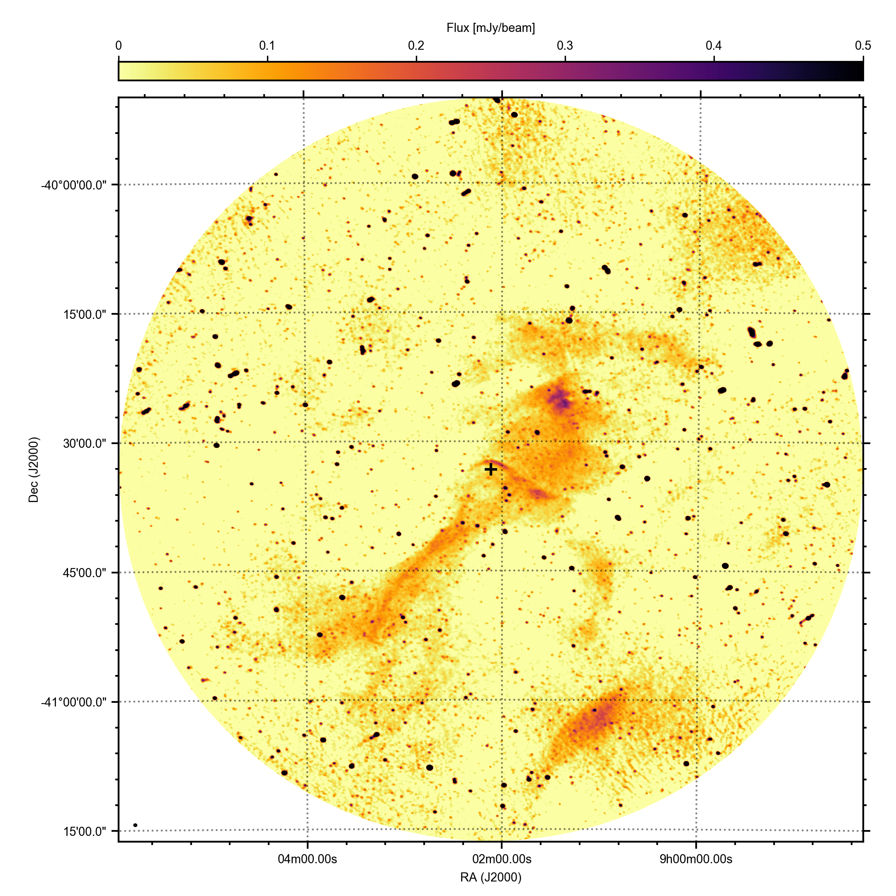
رصدنا المجال المحيط بنظام HMXB Vela X-1 ضمن مشروع ThunderKAT Large Survey Project باستخدام MeerKAT (Fender et al., 2016)، الذي ينفذ أرصاداً راديوية للثنائيات الجنوبية النشطة الباعثة للأشعة السينية، والمتغيرات الكارثية، والمستعرات العظمى، وانفجارات أشعة غاما. كان اثنان من أرصاد MeerKAT الثلاثة المدرجة في هذا العمل جزءاً من حملة أكبر منسقة متعددة الأطوال الموجية على الثنائي؛ وستُنشر نتائج تلك الدراسة، بما في ذلك نتائج MeerKAT الخاصة بـ Vela X-1 نفسه، في موضع آخر (Van den Eijnden وآخرون، قيد الإعداد). في هذه الورقة، نحلل فقط بيانات Stokes I المحصلة في هذه الأرصاد.
رُصد Vela X-1 (J2000 09h02m06.86s 40∘3316.9) بتلسكوب MeerKAT في 2020-09-25، و2020-09-27، و2020-10-11 (معرفات كتل الالتقاط 1600995961، و1601168939، و 1602387062 على الترتيب). استُخدمت مستقبلات النطاق L في التلسكوب (856 – 1712 MHz؛ نعرضها فيما بعد عند التردد المركزي 1.3 GHz)، مع ضبط المترابط ليعطي 32,768 قناة وزمن تكامل قدره 8 ثانية لكل نقطة رؤية. وفي الأرصاد الثلاثة، استُخدم في المصفوفة 59، و61، و60 هوائيات.
رُصد Vela X-1 مدة 30 دقيقة في كل من الجولات الثلاث، محاطاً بمسحين مدة كل منهما 2 دقائق لمصدر المعايرة الثانوي القريب J08255010. كما رُصد مصدر المعايرة الأولي القياسي J0408-6545 مدة 5 دقيقة في بداية كل جولة.
لكل من الأرصاد الثلاثة، أُجريت معايرة مرجعية باستخدام حزمة casa (McMullin et al., 2007). واستُمدت تصحيحات ممر النطاق والتأخير ومقياس الفيض من مسوحات المصدر الأولي، واستُحصلت تصحيحات الكسب المركب والتأخير من مسوحات المصدر الثانوي، بعد وسم البيانات كلها. طُبقت هذه التصحيحات على بيانات الهدف، التي قُسمت بعد ذلك ووُسمت باستخدام حزمة tricolour33 3 https://github.com/ska-sa/tricolour/. صُورت بيانات الهدف باستخدام wsclean (Offringa et al., 2014)، ثم أعيد تصويرها بعد بناء قناع إزالة الالتفاف، وبعد ذلك عويرت ذاتياً باستخدام حزمة cubical (Kenyon et al., 2018) لحل تصحيحات الطور والتأخير لكل 32 ثانية من البيانات.
بعد ذلك صُورت البيانات المعايرة ذاتياً للأرصاد الثلاثة معاً باستخدام ddfacet (Tasse et al., 2018). واستُمدت تصحيحات كسب معتمدة على الاتجاه باستخدام killms (Smirnov & Tasse, 2015)، مع تقسيم السماء إلى 15 اتجاهاً تحكمها توزع المصادر الساطعة المدمجة في المجال. ثم أعيد تصوير البيانات باستخدام ddfacet مع تطبيق تصحيحات الكسب الاتجاهية أثناء العملية. وقد صُححت صورة المجال الواسع النهائية المعروضة في الشكل 1 للحزمة الأولية باستخدام حزمة katbeam44 4 https://github.com/ska-sa/katbeam، مع حجب الخريطة خارج المستوى الاسمي 30%. ويمكن العثور على مزيد من التفاصيل حول عملية اختزال البيانات، إلى جانب معاملات المعايرة والتصوير ذات الصلة، على الشبكة55 5 https://github.com/IanHeywood/oxkat (Heywood, 2020).
3 النتائج
3.1 أرصاد MeerKAT
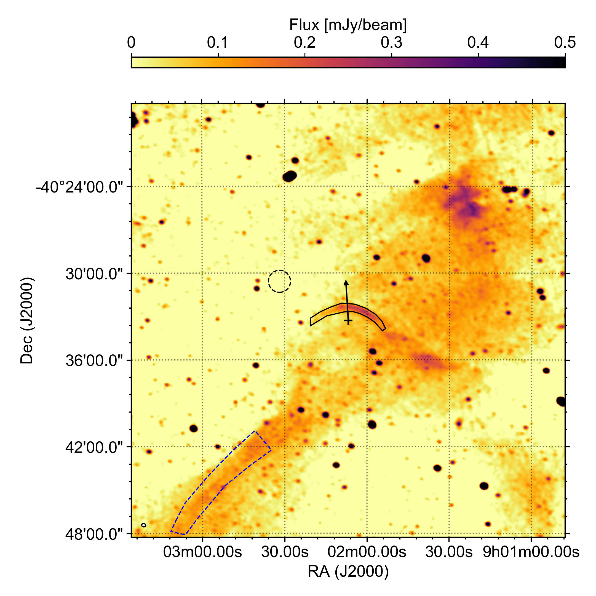
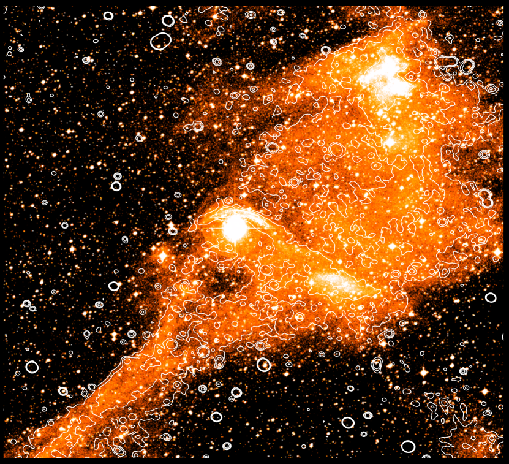
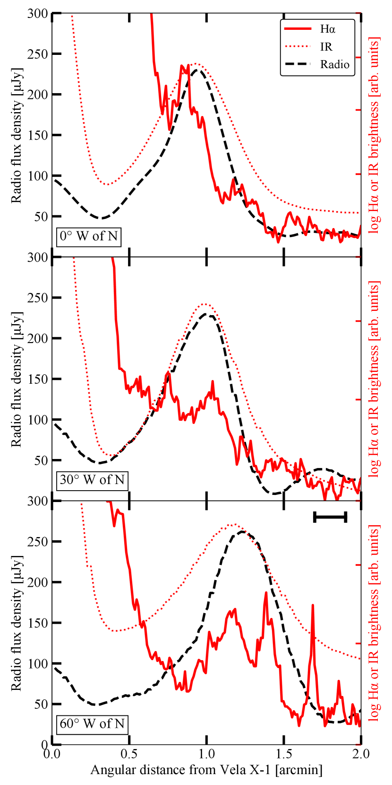
في الشكل 1، نعرض صورة MeerKAT المدمجة لكامل المجال عند 1.3 GHz، المنشأة من الأرصاد الثلاثة، وتمتد 0.72 درجة من التوجيه المركزي نحو نظام HMXB. تظهر عدة بنى منتشرة واسعة النطاق، من بينها الصدمة القوسية الواقعة مباشرة فوق الصليب الذي يشير إلى Vela X-1. وبالمثل، تُرصد بنية قطرية ممتدة يبدو أن Vela X-1 قد عبر خلالها. وكانت كلتا البنيتين، إلى جانب المصادر الراديوية الممتدة الأخرى في الصورة، معروفة بالفعل من صور H لهذا المجال (أي Gvaramadze et al., 2018, باستخدام بيانات SuperCOSMOS). وفي الشكل 2، نعرض تكبيراً داخلياً يحتوي على مربع مركزي من المجال بمقدار درجة، مقدماً منظراً أكثر تفصيلاً لمنطقة صدمة القوس.
علاوة على ذلك، في الشكل 3، نضيف الكفافات الراديوية فوق صورة SuperCOSMOS، مبينين التشابه اللافت بين المورفولوجيات المرصودة في كل من تصوير H والنطاق L. ويوحي هذا التشابه المورفولوجي، مقترناً بتقارب كثافاتها الفيضية من حيث رتبة المقدار، بوجود صلة محتملة بين آليات الانبعاث في الصدمة القوسية والبنى المحيطة. ويمكن تفسير مثل هذه الصلة عبر عمليات حرارية مقترنة بكثافات إلكترونية معززة بالصدمة في الصدمة القوسية، وهو ما سنبحثه تفصيلاً في القسم التالي. وبينما تكشف صور H عالية الاستبانة المكانية عن بنى خيطية في الصدمة القوسية (مثلاً Kaper et al., 1997)، لا تكشف صورة MeerKAT في النطاق L عن سمات مشابهة. غير أن ذلك يمكن أن يُعزى إلى حجم حزمة MeerKAT الأكبر البالغ 12"، وهو قريب من عرض خيوط H وأكبر من الفصل بينها.
تُعرض مقارنة أكثر تفصيلاً لملمح صدمة القوس في الشكل 4، حيث نبين الكثافة الفيضية الراديوية من MeerKAT، وسطوع H من SuperCOSMOS Survey، وسطوع الأشعة تحت الحمراء في نطاق W3 من WISE66 6 حُصل عليه من https://irsa.ipac.caltech.edu/applications/wise/. على امتداد ثلاثة خطوط من Vela X-1، مائلة عند 0، و30، و60 درجات إلى الغرب من الشمال. وتبين هذه المقارنات أن النطاقات الثلاثة كلها، بحسب استبانتها، تعرض ملامح متوافقة للصدمة القوسية. ويظهر نطاق H، الذي تهيمن عليه دالة انتشار النقطة النجمية عند المسافات الصغيرة، ملمحاً أحادي القمة عند رأس الصدمة القوسية، لكنه يظهر ملمحاً خيطياً مزدوج القمة في الاتجاهات الأخرى (لاحظ أن القمة الثالثة في اللوحة السفلى، عند – دقيقة قوسية، ناجمة عن نجم). أما الاستبانة الأدنى لصورتي الأشعة تحت الحمراء والراديو (وتُظهر الأخيرة بالشريط الأسود في اللوحة السفلى)، فتطمس أي بنية فرعية قد تكون موجودة، تاركة ملمحاً عريضاً وأملس ذا قمة.
لقياس الكثافات الفيضية الراديوية للصدمة القوسية، نبني منطقة مخصصة (مضلع أسود) في ds9 (Joye & Mandel, 2003)، كما هو مبين في الشكل 2. وقد بُنيت هذه المنطقة يدوياً، إذ إن اجتماع تزايد الفيض على طول الصدمة في الاتجاه الغربي مع المنطقة المحيطة مفرطة الكثافة عند طرفها الغربي يمنع استخدام مستوى كفاف فيضي واحد لتعريف الصدمة كلها. وبالنسبة إلى الزوايا الواقعة إلى الغرب من الشمال على امتداد الصدمة، تُعرّف حافة المنطقة حيث تهبط الكثافة الفيضية دون نحو 100 Jy، ممتدةً غرباً حتى النقطة التي يمكن فيها تعرف مورفولوجيا صدمة H. وعلى الجانب الشرقي الأخفت من الصدمة، غير المحاط بانبعاث منتشر، تُعرّف حافة الصدمة حيث تهبط تقريباً دون RMS المعرّف أدناه. نناقش آثار هذا التعريف للمنطقة في القسم 4.
تبلغ الكثافة الفيضية الراديوية العظمى للصدمة القوسية كلها Jy/bm، حيث يساوي الخطأ قيمة RMS في المنطقة القريبة (الدائرة المتقطعة في الشكل 2) الخالية من المصادر النقطية والانبعاث المنتشر القوي. ونطبق أيضاً سكربت radioflux77 7 https://github.com/mhardcastle/radioflux لقياس الفيض الراديوي المتكامل عبر الصدمة القوسية كلها، فنجد mJy، وهو ما يقابل كثافة فيضية وسطية قدرها Jy/bm. ولنمذجتنا اللاحقة (القسم 4)، نلاحظ أيضاً أن المساحة الإسقاطية للصدمة القوسية المفترضة في هذه الحسابات تبلغ 10100 arcsec2. ومع أن بنية الصدمة القوسية يمكن تعرفها أيضاً في النطاقات الفرعية التي لا تتأثر بقوة بتداخل الترددات الراديوية RFI، لا نحسب دليلاً طيفياً داخل النطاق؛ فحتى عند المتوسط عبر الصدمة كلها، لا تكفي نسبة الإشارة إلى الضجيج لقياس موثوق 88 8 علاوة على ذلك، يبين تحليل الصدمة القوسية الراديوية في BD+43 3652 أن الدليل الطيفي يمكن أن يتغير بقوة مع الموضع في الصدمة (Benaglia et al., 2010, 2021; Brookes, 2016)..
3.2 بيانات ASKAP وChandra الموجودة
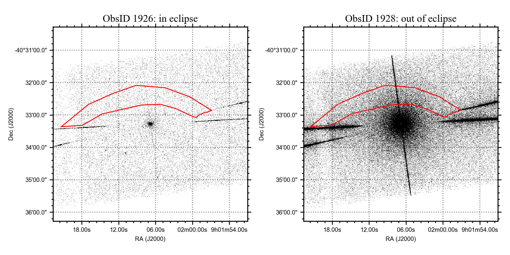
ولتقييد الشكل الطيفي أكثر، نختار بدلاً من ذلك استخدام أرصاد من مراصد مختلفة وعند ترددات مختلفة. أولاً، راجعنا إصدار بيانات Rapid ASKAP Continuum Survey (RACS؛ McConnell et al., 2020)، الذي يوفر تغطية كاملة للسماء عند ميول دون +41o باستبانة مكانية مشابهة لـ MeerKAT ( 15 ثانية قوسية). أُخذت جميع الصور في الإصدار الأول للبيانات عند تردد مركزي 887.5 MHz وبعرض نطاق 288 MHz، أسفل نطاق MeerKAT L مباشرةً (لكن مع تداخل معه). وتغطي موقع الصدمة القوسية ثلاثة توجيهات – 0911-37A، و0840-37A، و0855-43A – بحساسيات RMS وسطية قدرها 285، و292، و222 Jy. ولا تظهر أي دلائل على الصدمة القوسية في أي من الصور الثلاث. ويدل دمج عدم الكشف الأخير مع الكثافة الفيضية الوسطية في نطاق MeerKAT L البالغة Jy/bm على حد أعلى للدليل الطيفي قدره (حيث )، وهو غير مقيِّد لأي عملية انبعاث واقعية في الصدمة القوسية. إضافة إلى ذلك، فإن اختلاف تهيئات مصفوفتَي MeerKAT وASKAP، مع كون توزيع الأولى الغني بالنواة ملائماً خصوصاً لرصد الانبعاث الممتد، يزيد تعقيد المقارنة بين المرصدين الراديويين.
إذا كان الانبعاث الراديوي المرصود ناشئاً عن عمليات سنكروترونية غير حرارية، فإنه يشير إلى وجود جماعة من الإلكترونات النسبية المسرعة في الصدمة. وكما نناقش بتفصيل أكبر في القسم 4، تستطيع جماعة الإلكترونات هذه توليد انبعاث أشعة سينية إما بوصفه الجزء عالي الطاقة من طيفها السنكروتروني، أو بفعل تشتت كومبتون العكسي لفوتونات الغبار والفوتونات النجمية. وتعتمد مساهمة الأول في نطاق الأشعة السينية على معاملات ذات أهمية فيزيائية مثل الطاقة العظمى للإلكترونات والمجال المغناطيسي. لذلك، بحثنا أيضاً خواص الأشعة السينية للصدمة القوسية.
بما أن Vela X-1 نظام HMXB يراكم المادة على نحو مستمر، فإن لمعانه في الأشعة السينية (عادةً erg/s) سيغلب أي انبعاث منتشر من الصدمة القوسية. ونظراً إلى لمعانه في الأشعة السينية والمسافة الزاوية الصغيرة نسبياً (أقل من دقيقة قوسية واحدة) بين الثنائي والصدمة، تتداخل دالة انتشار النقطة لـ Vela X-1 مع الصدمة في جميع مراصد الأشعة السينية. غير أن Vela X-1 يُرى تقريباً من الحافة ويظهر باستمرار خسوفات بين الطورين المداريين 0.9 و0.1 (Falanga et al., 2015)، حيث يهبط معدل العد في Chandra بمقدارين عشريين ويتركز معظم فيض الأشعة السينية في حفنة من خطوط الانبعاث الضيقة (Watanabe et al., 2006). رصد Chandra مجال Vela X-1 مرتين أثناء الخسوفات (ObsIDs 102 و1926، بتعريضين قدرهما و ks، على الترتيب)، وفي كلتا المرتين استُخدم High-Energy Transmission Grating (HETG). ومع أن هذا الإعداد الآلي محسن للتحليل الطيفي عالي الاستبانة في الأشعة السينية، فإن الرصد يوفر صورة للمجال المرصود من بيانات الرتبة 0th المجمعة على الرقاقة S3. لذلك، نزّلنا كلا الرصدين، وأعدنا معالجة البيانات باستخدام المهمة chandra_repro في ciao الإصدار 4.13 (Fruscione et al., 2006)99 9 https://cxc.cfa.harvard.edu/ciao/، وأخيراً أنشأنا صورة باستخدام dmcopy، مع اختيار الفوتونات بين 0.5-10 keV وحجب الأحداث المستحثة بالأشعة الكونية دون 2 keV.
في الشكل 5، نعرض صورة الرتبة 0th الناتجة لـ ObsID 1926 في اليسار، إلى جانب ObsID 1928، المأخوذ خارج الخسوف، للمقارنة في اليمين. أثناء الخسوف، وعلى الرغم من خفوت Vela X-1، يُرصد نظام HMXB كمصدر نقطي، وتظهر أذرع المحزوز الخافتة بنمطها المميز الشبيه بحرف X. وتبين المنطقة الحمراء في كلتا اللوحتين منطقة صدمة القوس في نطاق MeerKAT L، بعد تعديلها قليلاً لتجنب الأذرع. وبينما لا تتسرب دالة انتشار النقطة للثنائي إلى منطقة الصدمة إلا خارج الخسوف، لا يمكن رؤية أي دليل على صدمة قوسية في الأشعة السينية في رصد الخسوف. وبالنسبة إلى رصدي الخسوف 102 و1926، نقيس معدلي عدّ خلفية في منطقة الصدمة كاملة قدرهما و cts/s. وهذه المعدلات أقل قليلاً من معدل الخلفية التقريبي للرقاقة كلها بعد تحجيمه بمساحة المنطقة، ما يؤكد الاستنتاج أعلاه بأن انبعاثاً ذا دلالة من الصدمة القوسية في الأشعة السينية غير مرصود. ولتحويل هذه المعدلات إلى حد أعلى للفيض، نستخدم طيف خلفية S31010 10 https://cxc.harvard.edu/contrib/maxim/bg/index.html، فنجد أن معدل العد الأول يقابل فيضاً يقارب Jy عند 1 keV. لذلك نضع حداً أعلى بمقدار 3- للفيض المتكامل للصدمة القوسية في الأشعة السينية عند 1 keV قدره Jy.
4 المناقشة
| Parameter | Quantity | Value | Reference |
|---|---|---|---|
| Total radio flux density | mJy | This work | |
| Maximum radio flux density | Jy/bm | This work | |
| Mean radio flux density | Jy/bm | This work | |
| MeerKAT central frequency | GHz | This work | |
| MeerKAT beam size (circular) | arcsec | This work | |
| H surface brightness | erg s-1 cm-2 arcsec-2 | Kaper et al. (1997) | |
| erg s-1 cm-2 arcsec-2 | Gvaramadze et al. (2018) | ||
| X-ray flux density at 1 keV | Jy | This work | |
| Standoff distance | pc | Gvaramadze et al. (2018) | |
| Bow shock width | pc | This work | |
| Bow shock surface | arcsec2 | This work | |
| Distance | kpc | Kretschmar et al. (2021) | |
| Bow shock volume | pc3 | This work | |
| Volume factor | This work | ||
| Wind mass loss rate | /yr | Grinberg et al. (2017)* | |
| Wind terminal velocity | km/s | Grinberg et al. (2017)* | |
| XRB velocity | km/s | Gvaramadze et al. (2018) |
*انظر أيضاً Kretschmar et al. (2021) لمناقشة موسعة لهذه المعاملات.
في هذا العمل، نبلغ عن الاكتشاف الراديوي عند 1.3 GHz لصدمة القوس في نظام HMXB Vela X-1 باستخدام تلسكوب MeerKAT. ولا نرصد نظيراً لا عند الترددات الراديوية الأدنى (باستخدام RACS) ولا عند طاقات الأشعة السينية (Chandra). لذلك نفتقر إلى أكثر مرصود مباشر يمكن أن يساعد على التمييز بين أصل حراري وأصل غير حراري للانبعاث الراديوي: قياس الدليل الطيفي1111 11 مع أننا نلاحظ أنه في حين يمكن عد الدليل الطيفي الحاد دليلاً على سيناريو غير حراري، فإن الدليل الطيفي الأكثر تسطحاً يتسق مع الخيارين كليهما. لذلك فإن القياس الطيفي وحده لا يحل هذه المسألة بالضرورة.. وبدلاً من ذلك، سنجري في هذه المناقشة حسابات تحليلية بسيطة لمقارنة هذين السيناريوين، ونبحث مدى توافقهما مع طاقات النظام والقيود من نطاقات موجية أخرى. ولزيادة قابلية نتائجنا لإعادة الإنتاج، يمكن تكرار هذه الحسابات في دفتر Jupyter المرافق لهذه الورقة (انظر بيان توافر البيانات). ونؤكد، مع ذلك، أن هاتين العمليتين ليستا متنافيتين. وكما نناقش بإيجاز في نهاية القسم 4.3، يرجح أن العمليتين تتعايشان وتساهمان في مجمل الانبعاث الراديوي.
4.1 اعتبارات عامة
قبل تقييم السيناريوهين المذكورين أعلاه، نناقش بإيجاز بعض الاعتبارات العامة لهذه الحسابات. أولاً، ينبغي أن ننظر فيما إذا كان النظام في حالة مستقرة، بالنظر إلى تفاعلاته السابقة مع المنطقة مفرطة الكثافة (Gvaramadze et al., 2018). وبالنظر إلى الفصل البالغ دقيقة قوسية بين الموضع الحالي لـ Vela X-1 وهذه المنطقة مفرطة الكثافة، مع تتبع اتجاه حركة Vela X-1 إلى الخلف (المبين بالسهم في الشكل 2)، وسرعته الفضائية البالغة km/s ومسافته البالغة kpc، فمن المرجح أن هذا التفاعل حدث قبل سنة. وتبين محاكاة تشكل الصدمات القوسية في Betelgeuse، على سبيل المثال، كيف تتحقق حالة مستقرة على مقاييس زمنية مشابهة، حتى وإن لم تكن صدمة قوسية موجودة في بداية المحاكيات (Mohamed et al., 2012). وينتج استنتاج مشابه من مقارنة مسافة الوقوف للصدمة القوسية بمسافتها من Vela X-1 عند زاوية 90 درجة من الرأس: ففي الراديو، تساوي هذه النسبة ، متسقةً مع القيمة المتوقعة لشكل صدمة قوسية في حالة مستقرة (Wilkin, 1996). وبناءً على هذين المسارين من الاستدلال، سنفترض أن الصدمة القوسية في حالة مستقرة.
في حساباتنا، سنفترض أن الصدمة القوسية متجانسة في كاملها، وهو ما يمكّننا من إجراء حسابات وتقديرات تحليلية بسيطة. وفي الواقع، تبين الصورة الراديوية، وكذلك صورة H الخيطية، أن هذا الافتراض غير متحقق. غير أننا نعطي الأولوية في هذه المرحلة لإجراء حسابات تحليلية، وسنترك التحليلات المحلولة مكانياً لأعمال مستقبلية تستخدم محاكيات تتجاوز نطاق هذا العمل. إضافة إلى ذلك، تتغير الكثافة الفيضية الراديوية قليلاً على مقياس حزمة MeerKAT: إذ تختلف الكثافة الفيضية العظمى والمتوسطة بمعامل . ونتوقع أن تتتبع تقديراتنا الفيزيائية التغيرات عبر الصدمة إلى رتبة مقدار، على مقاييس حجم الحزمة (نحو % من منطقة الصدمة القوسية في الشكل 2). وفي الدراسات المستقبلية، سيكون التحليل المحلول مكانياً مهماً لفهم تغير الكثافة الفيضية هذا مكانياً وعلاقته بأصل الانبعاث. وبالمثل، قد تبحث الدراسات المستقبلية للشكل الطيفي فيما إذا كانت منطقة الصدمة القوسية المعرفة لهذا العمل تتتبع تماماً المنطقة التي يهيمن فيها الانبعاث الراديوي للصدمة.
لأغراض هندسية، سنتبع الافتراض الشائع بأن للصدمة القوسية عمقاً من رتبة عرضها، . وفي الصورة الراديوية، نقيس ثانية قوسية، وهي قابلة للمقارنة مع مسافة الوقوف ثانية قوسية. وبالنظر إلى مساحة سطح منطقة الصدمة القوسية ( arcsec2) والمسافة إلى Vela X-1، يترجم ذلك إلى حجم تقريبي للصدمة القوسية قدره pc3. ويمكن تقدير عامل حجم الصدمة القوسية، أي كسر قدرة الرياح المار عبر الصدمة القوسية، على أنه . وإذا استخدمنا بدلاً من ذلك نهج De Becker et al. (2017)، الذي يقارن الفيوض السطحية، نجد . وينشأ هذا الفرق من الشكل غير الدائري لقوس الصدمة. وفي حسابنا التالي، يؤدي استخدام أعلى إلى كفاءات حقن أدنى (القسم 4.3)؛ لذلك فإن افتراضنا بشأن يجعل تلك الحسابات أكثر تحفظاً بالنسبة إلى الاستنتاجات التي نستخلصها. وفي الجدول 1، نسرد جميع معاملات النجم (والرياح) والصدمة القوسية ذات الصلة بالمعادلات المعروضة في النص الرئيس. أما المعاملات التي تظهر في الملحق فقط، فتُسرد هناك. وأخيراً، نؤكد أن الأدبيات تحتوي على تقديرات كثيرة لـ ، و، و؛ وقد اخترنا إما قيماً تمثيلية أو حديثة، ونجد أن أياً من استنتاجاتنا النوعية لا يعتمد على هذه الاختيارات الدقيقة.
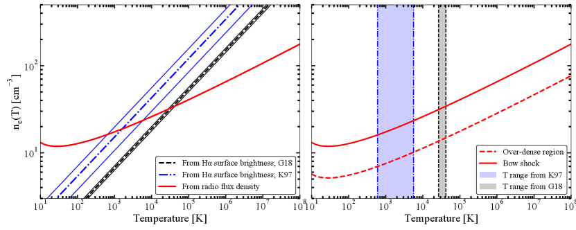
4.2 سيناريو الانبعاث الحراري الحر-الحر
يعتمد الانبعاث الحراري الحر-الحر (الإشعاع الكابح) من صدمة قوسية، أساساً، على خاصيتين فيزيائيتين لجماعة الإلكترونات في الصدمة: كثافة عدد الإلكترونات ودرجة الحرارة . ولا تحدد هذه المعاملات لمعان النظام الراديوي (وطيفه) فحسب، بل تحدد أيضاً سطوع سطح انبعاث خط H. وبما أن صدمة القوس في Vela X-1 مرصودة في صور H والراديو معاً، يمكننا الجمع بين النطاقين لاستنتاج كثافة الإلكترونات ودرجة حرارتها اللازمتين لتفسير الأرصاد.
تعطى إصداريّة الانبعاث الحر-الحر بدلالة درجة الحرارة () وكثافة الإلكترونات () بواسطة (Longair, 2011):
| (1) |
في هذه المعادلة، افترضنا غاز هيدروجين متأيناً بالكامل (أي إن يساوي عدد البروتونات). وعند تردد MeerKAT الرصدي، تكون لأي درجة حرارة نأخذها في هذا العمل. لذلك يمكننا إهمال الأس النهائي في التعبير أعلاه. ويمكن تقريب عامل Gaunt عند الترددات الراديوية على النحو (Longair, 2011):
| (2) |
حيث تساوي ثابت Euler (). وترتبط إصداريّة الحر-الحر بالفيض الراديوي المتكامل المرصود (في النظام الرقيق بصرياً، كما يناقش قرب نهاية هذا القسم) عبر
| (3) |
حيث تمثل المسافة إلى المصدر، وتساوي حجم الصدمة القوسية. وعند جمع هذه المعادلات، تتيح لنا تحديد العلاقة بين كثافة الإلكترونات ودرجة الحرارة المتسقة مع الكثافة الفيضية المقاسة من MeerKAT.
يمكننا تكرار هذا التمرين لانبعاث خط H، حيث تعطى الإصداريّة السطحية بدلاً من ذلك بواسطة (Gvaramadze et al., 2018):
| (4) |
ويؤدي تكامل هذه الدالة على امتداد خط النظر في الصدمة القوسية إلى سطوع السطح في H، الذي يمكن مقارنته بخرائط H المرصودة. وكما ذكرنا، سنفترض أن كثافة الإلكترونات ودرجة الحرارة متجانستان عبر الصدمة القوسية:
| (5) |
أُوردت قيود على سطوع سطح H المرصود في Kaper et al. (1997) وGvaramadze et al. (2018). يقيس الأول شدة H العظمى ضمن معامل 2 من erg s-1 cm-2 arcsec-2، بينما يقيس الآخر erg s-1 cm-2 arcsec-2. هنا، سنستخدم كلا القياسين لاستنتاج العلاقة بين كثافة الإلكترونات ودرجة الحرارة.
في اللوحة اليسرى من الشكل 6، نرسم كثافة الإلكترونات بدلالة درجة الحرارة باستخدام فيض MeerKAT المرصود وكلا قيدي من الأدبيات. وتشير الخطوط الزرقاء والسوداء المتقطعة إلى عدم يقين بمعامل في من Kaper et al. (1997)، وإلى عدم يقين مفترض قدره لـ Gvaramadze et al. (2018)، الذين لم يوردوا عدم يقين في عملهم. وبقياس التقاطعات مع منحنى MeerKAT الأحمر، نجد cm-3 و K باستخدام Kaper et al. (1997)، و cm-3 و K باستخدام Gvaramadze et al. (2018).
ولتقييم ما إذا كانت هذه القيم المستنتجة واقعية، يمكننا إجراء عدة فحوص. أولاً، يمكننا أن ننظر بإيجاز في درجة الحرارة المستنتجة. بافتراض حفظ الكتلة والزخم والطاقة، يمكننا الحصول على تقدير لدرجة الحرارة بعد الصدمة من ، حيث للوفرة الكونية و هي كتلة البروتون (Helder et al., 2009). وباستخدام السرعة النجمية لـ Vela X-1، نستنتج K، وهي بالفعل قريبة من القيمة المستنتجة باستخدام Gvaramadze et al. (2018) لخرائط H. ثانياً، تشبه قيم درجة الحرارة المستنتجة أيضاً المجال – K الموجود لعينة من الصدمات القوسية المرصودة في H لدى Brown & Bomans (2005).
ثالثاً، يمكننا استخدام رصد بنى أخرى كبيرة الحجم ومنتشرة باستخدام MeerKAT. فعلى سبيل المثال، يُرصد حيد الانبعاث المنتشر إلى الجنوب الشرقي من Vela X-1، الواضح في الشكل 1، كذلك في صورة SuperCOSMOS لـ H. وفي الواقع، يقترح Gvaramadze et al. (2018) عبر المحاكيات أن هذه البنية المنتشرة تقابل منطقة مفرطة الكثافة في الوسط بين النجمي، ووجدوا أن زيادة في الكثافة بمعامل 3 مقارنة بالوسط بين النجمي المحيط يمكن أن تفسر مورفولوجيا H المرصودة لكل من المجال والصدمة القوسية. وفي كل من صورتي MeerKAT الراديوية وSuperCOSMOS لـ H، تُظهر الصدمة القوسية فيضاً أعلى من الحيد، وإن كان كلاهما من رتبة مقدار متشابهة. لذلك يمكن تصور سيناريو ينشأ فيه الانبعاث الراديوي وانبعاث H لكلتا البنيتين من آلية الانبعاث نفسها (الحر-الحر)، مع فيض معزز في الصدمة القوسية ناجم عن زيادة كثافية معززة بالصدمة.
لاختبار السيناريو أعلاه، نعرّف منطقة عبر أكثر مقاطع الحيد مفرط الكثافة سطوعاً راديوياً في الصورة الراديوية، كما يبينها الكفاف الأزرق المتقطع في الشكل 2. وبطريقة مشابهة لمنطقة الصدمة القوسية، عرّفنا يدوياً هذه المنطقة الصندوقية المقوسة بحيث يهيمن عليها انبعاث الحيد من دون أن تحتوي مساهمات ذات دلالة من مصادر نقطية راديوية. ومن الطبيعي أن تعطي مورفولوجيا مختلفة قليلاً للمنطقة حسابات مختلفة قليلاً أدناه؛ غير أن المنطقة المستخدمة تعاين الكثافة الفيضية الوسطية في الجزء الرئيس من الحيد مفرط الكثافة. نكرر حساب الصدمة القوسية لهذه المنطقة مفرطة الكثافة، فنقيس كثافة فيضية راديوية قدرها mJy، متكاملة على مساحة المنطقة البالغة 42400 arcsec2. وبما أننا لا نعرف الهندسة ثلاثية الأبعاد 3D لهذه المنطقة مفرطة الكثافة، فسنتبع تعليلنا للصدمة القوسية ونفترض أن عمقها مشابه لعرضها البالغ دقيقة قوسية فرسخ (مع افتراض مسافة مشابهة لـ Vela X-1، يدعمها الدليل على التفاعل بين Vela X-1 والمنطقة مفرطة الكثافة في Gvaramadze et al., 2018).
باستخدام هذه الافتراضات الهندسية وقياس الفيض في المعادلة 3، نرسم القيود الراديوية على و لكل من الصدمة القوسية والمنطقة مفرطة الكثافة في اللوحة اليمنى من الشكل 6. وتشير المساحات المظللة الزرقاء والرمادية إلى مجالات درجات الحرارة المشتقة سابقاً للصدمة القوسية. وتحت افتراض أن درجة الحرارة لا تتغير كثيراً في الصدمة، نجد أن زيادة كثافة الصدمة بمعامل ستفسر البيانات. وبما أن درجة الحرارة في الصدمة ستتغير أيضاً في الواقع، فسيختلف معامل زيادة الكثافة الدقيق قليلاً، مع أننا نؤكد أن العامل الدقيق يتدرج خطياً مع العمق المفترض للمنطقة مفرطة الكثافة على امتداد خط النظر، وهو أمر لم يُقَس.
في الصدمات الأدياباتية، تقتضي معادلات Rankine-Hugoniot تعزيز الكثافة بمعامل 4 (Landau & Lifshitz, 1959). وفي تحليل Gvaramadze et al. (2018)، تُستنتج زيادة أعلى في الكثافة، بعوامل تصل إلى ، من محاكيات تقدم مطابقات جيدة لصور SuperCOSMOS المرصودة. ومع مثل معاملات التعزيز هذه، ستقتضي كثافات إلكترونات الصدمة المستنتجة كثافات للوسط بين النجمي في المجال – cm-3 (باستخدام Kaper et al., 1997) أو – cm-3 (باستخدام Gvaramadze et al., 2018). وقد أُنجزت تقديرات أدبية لكثافة الوسط بين النجمي إما باستخدام قياسات مسافة الوقوف وخواص النجم (والرياح)، أو باستخدام الانبعاث البصري وتحت الأحمر لمناطق HII واسعة النطاق والقريبة. وعادةً ما تكون التقديرات الأولى من رتبة – cm-3 (مثلاً Kaper et al., 1997; Peri et al., 2015; Gvaramadze et al., 2018)، مع تقديرات أعلى تصل إلى cm-3 عند استخدام معاملات مختلفة للرياح النجمية (مثلاً Gvaramadze et al., 2011). ويميل النوع الأخير كذلك إلى اقتراح كثافات أعلى للوسط بين النجمي، من رتبة – cm-3 (Kaper et al., 1997; Lequeux, 2005). لذلك، وبالنظر إلى هذا المجال من التقديرات، تبدو كثافة الوسط بين النجمي المستنتجة بدمج خرائط الراديو وH معقولة، كما تبدو كذلك زيادة كثافة الصدمة المستنتجة (الشكل 6، يميناً). ونلاحظ أيضاً أن كثافاتنا المستنتجة تتدرج مع عمق الصدمة القوسية على نحو ؛ لذلك فإن عمقاً أكبر سيعني كثافات مستنتجة أدنى للصدمة والوسط بين النجمي.
أخيراً، نلاحظ أن الإصداريّة الحرارية تتدرج على نحو ؛ لذلك، بالنسبة إلى تعزيزات كثافة الصدمة بما لا يقل عن إلى ، نتوقع كثافات فيضية راديوية حرارية من الوسط بين النجمي المحيط (أي خارج المنطقة مفرطة الكثافة) أخفت بمرتبة إلى مرتبتين من المقدار (إذا افترضنا، ببساطة، درجات حرارة وأعماقاً مشابهة). وهذه الكثافات الفيضية دون حساسية RMS الراديوية لدينا، ما قد يفسر سبب تتبع الانبعاث الراديوي المنتشر لمنطقة H مفرطة الكثافة عن قرب وعدم رصد أي انبعاث راديوي منتشر آخر.
من الاعتبارات أعلاه، يقدم سيناريو الانبعاث الحراري الحر-الحر تفسيراً متسقاً للانبعاث المرصود في غياب قياس للدليل الطيفي. وبناءً على هذا السيناريو، يمكننا أيضاً وضع عدة تنبؤات. أولاً، يمكننا تقدير العمق البصري في نطاق MeerKAT، لدرجات حرارة الصدمة النموذجية المستنتجة. ويعطى العمق البصري بتكامل معامل الامتصاص على امتداد خط النظر (Longair, 2011):
| (6) |
حيث افترضنا، مرة أخرى، أن الصدمة متجانسة للحصول على تقديرات تحليلية. وبالنسبة إلى كثافة نموذجية cm-3 ودرجة حرارة K، نجد معامل امتصاص في نطاق MeerKAT قدره pc-1. لذلك، وبما أن pc، فإن الانبعاث الحر-الحر سيكون رقيقاً بصرياً. وفي الواقع، بالنسبة إلى معاملات صدمة من رتبة المقدار هذه، يمكننا دائماً توقع أن يكون الانبعاث رقيقاً بصرياً في النطاقات الراديوية الشائعة.
يمتلك طيف الحر-الحر الرقيق بصرياً دليلاً طيفياً قدره ، حتى تردد كسر حيث . لذلك نتوقع، بالنسبة إلى درجات الحرارة المستنتجة، أن يقع هذا القطع في النطاقات البصرية أو عند ترددات أدنى، بما يتسق مع عدم رصد انبعاث أشعة سينية. غير أن الكشف المباشر عن هذا القطع، أو عن انبعاث استمراري للصدمة القوسية، في النطاقات البصرية يبدو غير ممكن؛ فعند الطرف منخفض التردد من النطاق البصري ( Hz)، لا يتجاوز الفيض المتوسط المتوقع Jy arcsec-2، أو AB mag arcsec-2. وعند ترددات أدنى، يهيمن الغبار (في الأشعة تحت الحمراء) على الطيف، أو يكون أخفت وأكثر امتداداً من أن يُرصد بالمراصد الحالية دون المليمترية (أي ALMA).
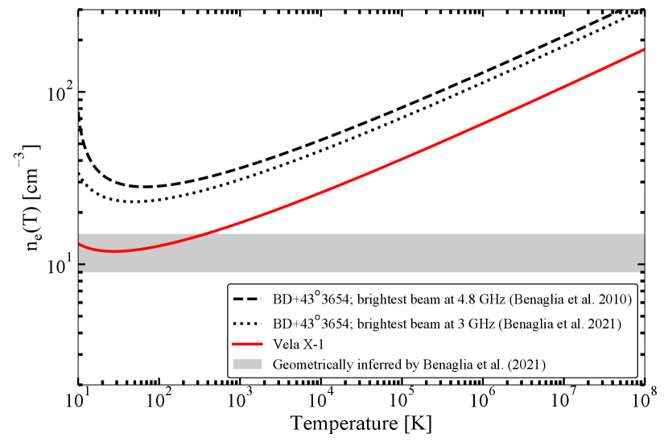
أخيراً، يمكننا أن نعود بإيجاز إلى الصدمة القوسية الوحيدة الأخرى المرصودة راديوياً، BD+43o3654، وننظر إليها ضمن الإطار الحراري نفسه. وعلى الرغم من أن كثافتها الفيضية المتكاملة مذكورة في Benaglia et al. (2010) (4.8 GHz) وBenaglia et al. (2021)، فإن مساحة السطح الكلية ليست مذكورة. وبدلاً من ذلك، يمكننا استخدام فيض أسطع حزمة في الصدمة القوسية والنظر في ذلك الجزء فقط من البنية. تشير الكفافات الراديوية عند GHz إلى كثافة فيضية عظمى من رتبة mJy/bm (Benaglia et al., 2010)، بينما يبلغ الفيض الأعظمي عند 3 GHz قيمة mJy/bm (Benaglia et al., 2021). وعند 4.8 GHz، توحي الحزمة الدائرية البالغة ثانية قوسية، والمسافة البالغة kpc، والعرض المعروف للصدمة القوسية، بحجم قدره pc3. وعند 3 GHz، يبلغ حجم الحزمة ثانية قوسية x ثانية قوسية، ما يوحي بدلاً من ذلك بحجم قدره pc3. وعند كلا الترددين، يمكننا عندئذ دمج تقديرات الفيض والحجم والمسافة لتقييد كثافة الإلكترونات ودرجة الحرارة. وكما هو مبين في الشكل 7، فإن كلا التقديرين متشابهان إلى حد كبير، بالنظر إلى الافتراضات التبسيطية في هذا النهج. علاوة على ذلك، فإن كثافات الإلكترونات الضمنية أكبر بما بين – مرة مما هي عليه في Vela X-1. ويتراوح تعزيز كثافة الصدمة بين و لدرجات حرارة دون K، مقارنة بكثافة الوسط بين النجمي cm-3 حول BD+43o3654 التي قاسها Benaglia et al. (2021)؛ وعند درجة حرارة K، تقابل سرعة نجمية قدرها km/s (Benaglia et al., 2021) ومع افتراض ، يقع هذا العامل بين و.
4.3 سيناريو الانبعاث غير الحراري/السنكروتروني
بدلاً من ذلك، يمكن أن ينشأ الانبعاث الراديوي من صدمة القوس في Vela X-1 من انبعاث سنكروتروني صادر عن جماعة من الإلكترونات النسبية. وقد استُدعي هذا السيناريو أول مرة للصدمة القوسية الراديوية في BD+43o3654 (Benaglia et al., 2010)، ثم طُور تحليلياً وعددياً للتنبؤ بقابلية رصد صدمات قوسية أخرى في الراديو والأشعة السينية/أشعة (مثلاً del Valle & Romero, 2012; del Valle & Pohl, 2018; del Palacio et al., 2018). وباختصار، توفر الرياح النجمية ميزانية الطاقة لتسريع الإلكترونات عبر تسريع الصدمة الانتشاري، مكوّنةً جماعة إلكترونات نسبية. وتفقد هذه الجماعة طاقتها عبر الانبعاث السنكروتروني، وتشتت كومبتون العكسي لفوتونات الغبار والفوتونات النجمية، والإشعاع الكابح النسبي. وبدلاً من ذلك، يمكن للجسيمات أن تهرب من منطقة الصدمة القوسية عبر الانتشار. وتعتمد الأهمية النسبية لهذه العمليات على الهندسة، والمجال المغناطيسي، وحقلي الإشعاع النجمي وتحت الأحمر.
بالنسبة إلى مجموعة فرعية من الحسابات في هذا القسم، نحيل القارئ إلى الملحق للاطلاع على جميع التفاصيل. يمكننا بدء تقييم السيناريو غير الحراري/السنكروتروني بتقدير مجال الصدمة المغناطيسي عبر حجج التجهيز المتساوي، مع تصغير الطاقة المجمعة في الجسيمات والمجالات المغناطيسية. وفي هذا الحساب، وفي بقية هذا القسم، لا نعرف الدليل الطيفي الراديوي . لذلك نفترض أن ، كما وجد لـ BD+43o3654 (Benaglia et al., 2010). وفي الملحق، وفي عدد من الأشكال في هذا الحساب، سنعرض أيضاً النتائج بافتراض . ومع ذلك، نلاحظ منذ البداية أنه حيثما تعتمد استنتاجاتنا النوعية على القيمة الدقيقة لـ ، سنناقش ذلك صراحة.
وكما يفصل الملحق، ولعدد متساو من الإلكترونات والبروتونات، وبافتراض طاقتي إلكترونات دنيا وعظمى قدرهما keV و keV على الترتيب، نجد مجالاً مغناطيسياً للتجهيز المتساوي قدره G. وتبلغ الطاقة المغناطيسية وطاقة الجسيمات الكليتان عند التجهيز المتساوي erg و erg. وباستخدام حقيقة أن قدرة الرياح الحركية الكلية التي تمر عبر منطقة الصدمة القوسية تُعطى بـ
| (7) |
نجد أن المقياس الزمني لحقن طاقة الجسيمات المستنتجة يقارب ثانية. ثم يمكننا تقدير أن المجال المغناطيسي عند التجهيز المتساوي يقابل، من دون أي تضخيم للمجال، مجالاً نجمياً من رتبة G (Benaglia et al., 2021; Kretschmar et al., 2021). وهذه القيمة أدنى بكثير من قياس انقسام Zeeman الوحيد المتاح لـ Vela X-1 (بحسب علم المؤلفين)، وهو من رتبة عدة آلاف G (Bychkov et al., 2009). غير أن انقسام Zeeman لم يُرَ على نحو متسق في خطوط مختلفة، ووُجد أنه شديد التغير زمنياً (Kemp & Wolstencroft, 1973; Angel et al., 1973).
ومع مواصلة اتباع التحليل المنجز لـ BD+43o3654 ولصدمات قوسية تحت حمراء أخرى (del Valle & Romero, 2012; del Valle & Pohl, 2018; del Valle et al., 2013; del Palacio et al., 2018)، ننتقل الآن إلى تقدير المقاييس الزمنية ذات الصلة بتسريع الإلكترونات، وخسائر الانبعاث، والهروب. نعد تسريع الصدمة الانتشاري عملية التسريع. وكعمليات إشعاعية، ندرج الإشعاع السنكروتروني، وتشتت كومبتون العكسي للإلكترونات في حقلي الإشعاع النجمي وتحت الأحمر (باستخدام التقريبات التحليلية لنظامي Thompson وKlein-Nishina من Khangulyan et al., 2014)، والإشعاع الكابح النسبي. وتُفصل الحسابات الكاملة في الملحق.
تُرسم المقاييس الزمنية الناتجة، بدلالة طاقة الإلكترون وبافتراض مجال التجهيز المتساوي المغناطيسي، في الشكل 8. وتُعطى الطاقة العظمى للإلكترونات بتقاطع مقياس التسريع الزمني مع أقصر مقياس زمني للخسارة، حيث يهيمن الهروب الحملي على الأخير. نجد طاقة عظمى حول eV، مشابهة لافتراضنا السابق. ولا تصبح الخسائر الإشعاعية مهيمنة إلا عند طاقات أعلى بنحو رتبة مقدار واحدة. وإحدى السمات اللافتة هي تشابه مقياس الهروب الزمني ومقياس التجهيز المتساوي الزمني، إذ يزيد الأول على الأخير بمعامل فقط لهذا المجال المغناطيسي. وبعبارة أخرى، ينبغي حقن نحو نصف طاقة الرياح الحركية المتاحة كلها في تسريع الجسيمات لضمان سيناريو حالة مستقرة، وهي كفاءة مطلوبة تزداد أكثر عندما تصبح الخسائر الإشعاعية ذات صلة قرب . وسنعود إلى مسألة كفاءة تسريع الإلكترونات العالية استثنائياً هذه في نهاية هذا القسم، آخذين اعتمادها على المجال المغناطيسي في الحسبان بالكامل.
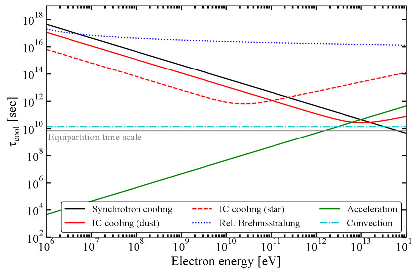
بعد ذلك، يمكننا النظر في الطيف السنكروتروني عريض النطاق لمطابقة الكثافة الفيضية الراديوية المرصودة والحد الأعلى لفيض الأشعة السينية من Chandra. وقد يقيد عدم الكشف الأخير رصدياً الطاقة العظمى للإلكترونات والمجال المغناطيسي، لأن كسر التبريد السنكروتروني يعتمد على كلتا الكميتين. وكما يُشتق في الملحق، تضبط هروب الإلكترونات للمجالات المغناطيسية حتى قيمة انتقالية قدرها G، وفوقها تتولى الخسائر السنكروترونية تحديد بدلاً من ذلك. ومن المهم أن هذا يعني أن تردد كسر التبريد السنكروتروني يزداد تربيعياً مع شدة المجال المغناطيسي عندما تكون G، بينما يبقى ثابتاً عند Hz للحقول المغناطيسية الأقوى. ويقع تردد كسر التبريد الأعظمي هذا بعامل اثنين دون الطاقة الدنيا في نطاق Chandra ( keV). وبالنظر إلى ازدياد حدة الطيف السنكروتروني فوق كسر التبريد، فإن هذا العامل الصغير يوحي بأن المجال المغناطيسي قد يكون مقيداً بالفعل بعدم الكشف بواسطة Chandra.
في الشكل 9، نعرض الأطياف السنكروترونية المتوقعة بافتراض إما أو ، وباستخدام المجال المغناطيسي إما من التجهيز المتساوي أو من الانتقال بين نظامي هيمنة الهروب وهيمنة السنكروترون (مع إعادة الحساب باتساق في حالة ). ومن هذه التوزيعات الطيفية للطاقة المنمذجة، نستنتج أن الطيف السنكروتروني يخالف عدم الكشف بواسطة Chandra لقوى مجال مغناطيسي في النظام المهيمن سنكروترونياً، مع أدلة طيفية ضحلة نسبياً (هنا، ). وبعبارة أخرى، ينبغي أن يكون المجال المغناطيسي أقرب إلى التجهيز المتساوي أو أن يكون الدليل الطيفي أشد انحداراً. وعلى العكس، بالنسبة إلى ، يبقى أي مجال مغناطيسي مرتفع كيفما كان متسقاً مع عدم الكشف بواسطة Chandra.
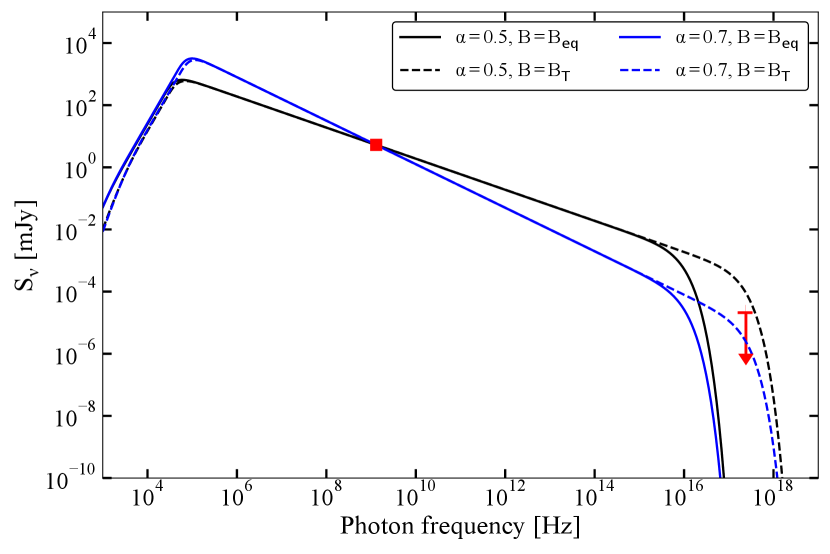
أشرنا سابقاً إلى أنه، في ظل افتراض التجهيز المتساوي، يجب حقن كسر ذي شأن (%) من قدرة الرياح الحركية المتاحة في تسريع الجسيمات للحفاظ على الحالة المستقرة للنظام. غير أن هذه الكفاءة تعتمد على المجال المغناطيسي والدليل الطيفي: فمجال مغناطيسي أعلى يعني إصداريّة أعلى للإلكترونات، ما يتطلب طاقة كلية أصغر في الإلكترونات وكفاءة تسريع أدنى لمطابقة الفيض الراديوي المرصود. وبالمثل، يحدد الدليل الطيفي ميل توزيع كثافة الإلكترونات، ومن ثم الطاقة الكلية في الإلكترونات. ويمكننا تعريف كفاءة الحقن على أنها
| (8) |
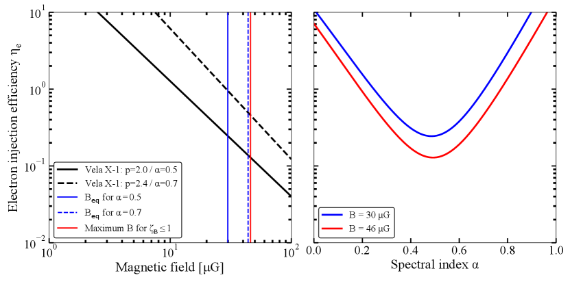
حيث تمثل طيف الحقن، وتُعطى بالمعادلة 7. وكما رأينا، فإن آلية الخسارة المهيمنة هي الهروب. وبما أن هذه الآلية مستقلة عن طاقة الإلكترون، يمكننا تقريب طيف الحقن في الحالة المستقرة على أنه 1212 12 انظر المعادلة 15 في del Valle & Romero (2012) للمعادلة الكاملة، بما في ذلك الخسائر الإشعاعية؛ إن إهمال تلك الخسائر يقلل قليلاً من كفاءة الحقن، لكنه يسمح بتقريب تحليلي كامل.، حيث تُعرّف دالة كثافة عدد الإلكترونات في الملحق. وتؤدي إعادة كتابة تطبيع لمطابقة الفيض الراديوي المرصود إلى (انظر الملحق للاشتقاق الكامل):
| (9) |
حيث إن هو دليل قانون القدرة لتوزيع كثافة عدد الإلكترونات، المرتبط بالدليل الطيفي على نحو . ومن هذه المعادلة، يمكننا استنتاج أن كفاءة الحقن تعتمد على الخواص الهندسية (مثل ، و، و)، والمرصودات الراديوية (، و في حالة الأرصاد متعددة النطاقات)، وخواص الرياح النجمية، والمجال المغناطيسي. نرسم كفاءة التسريع بدلالة المجال المغناطيسي لـ و في الشكل 10 (يساراً).
وبافتراض التجهيز المتساوي للحالتين المرسومتين لـ ، نجد كفاءتي حقن قدرهما % () و% (؛ G). وبما أن النظام ليس بالضرورة في تجهيز متساو، يمكننا بدلاً من ذلك النظر في مجالات مغناطيسية أعلى، تقابل كفاءات أدنى. غير أن المجال المغناطيسي لا يمكن أن يكون عالياً كيفما كان: فأولاً، سيزيد ذلك كثيراً الطاقة المخزنة في المجال المغناطيسي، وثانياً، لا تتشكل الصدمة إلا ما دام الضغط المغناطيسي لا يتجاوز الضغط الحراري وتصبح الرياح غير قابلة للانضغاط. وغالباً ما يُعلّم هذا الشرط (مثلاً del Palacio et al., 2018; Benaglia et al., 2021) بالمعامل ، عبر
| (10) |
حيث إن هو معامل الغاز المثالي الأدياباتي و هي كثافة الرياح عند مسافة الوقوف. وتبقى الرياح قابلة للانضغاط، بما يسمح بتشكل الصدمة، عندما ، ما يقتضي مجالاً مغناطيسياً أعظمياً قدره G. وعند هذا المجال المغناطيسي، المبين بالخط الأحمر في الشكل 10 (يساراً)، تبلغ كفاءات الحقن الضمنية 13% و45% لـ و، على الترتيب.
هذه القيم لكفاءة الحقن أعلى بكثير مما يُستنتج في أنظمة قابلة للمقارنة: فعلى سبيل المثال، يستنتج del Palacio et al. (2018) قيماً بين % و بافتراض و، على الترتيب، لـ BD+43o3654. وباستخدام قيمتين متطرفتين لـ على نحو مماثل، يجد Benaglia et al. (2021) كفاءتين قدرهما % () و% () للمصدر نفسه. وفي الواقع، يمكننا تطبيق المعادلة 9 على أسطع حزمة في BD+43o3654 لدى Benaglia et al. (2010) (انظر نهاية القسم 4.2) بافتراض معاملات الرياح النجمية الواردة في ذلك العمل: ويؤكد ذلك أن كفاءات الحقن المطلوبة في BD+43o3654 أدنى برتبة مقدار واحدة للدليل الطيفي نفسه . ويمكن إجراء مقارنات إضافية مع Stappers et al. (2003)، الذين أوردوا كفاءتين قدرهما % و% لسديم Crab وسديم الرياح النجمية النابضة حول B1957+20، على الترتيب.
ليست كفاءات الحقن العالية هذه المطلوبة في صدمة القوس في Vela X-1 نتيجة افتراض قيم غير صحيحة لـ أيضاً. فمع أن قد تكون مختلفة عن أو ، فإن كفاءة الحقن لا تعتمد رتيباً على الدليل الطيفي. في اللوحة اليمنى من الشكل 10، نرسم مقابل لقيمتين مختلفتين للمجال المغناطيسي (التجهيز المتساوي لـ وافتراض ). وفي كلتا الحالتين، تُصغَّر الكفاءة قرب . ويمكن للمرء أيضاً أن يرى كيف يخفض المجال المغناطيسي الأعلى الكفاءة، ما يعني أن % هي أدنى قيمة ممكنة لـ Vela X-1. وأخيراً، عند قيم أدنى بكثير، يتطلب عدم رصد انبعاث الأشعة السينية مجالاً مغناطيسياً أدنى (مثلاً الشكلان 12 و9)، ما يزيد كفاءة الحقن المستنتجة.
يمكننا أن نستنتج أن توليفة مضبوطة بدقة فقط من ميل توزيع كثافة الإلكترونات والمجال المغناطيسي تعطي كفاءة حقن تقترب من القيم العظمى المستنتجة لـ BD+43o3654 وأنواع أخرى من السدم. وبدلاً من ذلك، ومن دون مثل هذا الضبط الدقيق، تلزم قيم أعلى بكثير تصل إلى 100% لتفسير الانبعاث الراديوي لصدمة القوس في Vela X-1 بالكامل عبر سيناريو غير حراري.
وبالمقابل، يمكننا عكس هذه الحجة: إذا كانت كفاءة الحقن في الواقع أدنى بعامل عشرة من القيم المشتقة أعلاه (أي % على الأقل)، فيمكن إسناد عُشر الفيض الراديوي المرصود إلى العمليات السنكروترونية. وبما أن كثافات الإلكترونات في السيناريو الحراري تتدرج مع ، فإن ذلك يعني انخفاضاً قدره % فقط في المستنتجة. وهذا الانخفاض لا يبطل الحجج في القسم 4.2، وهو أصغر من الفروق المنهجية بين الكثافات المستنتجة باستخدام Kaper et al. (1997) وGvaramadze et al. (2018) لخرائط H. لذلك فإن سيناريو حرارياً + غير حراري مزدوجاً، يهيمن فيه الأول على الفيض المرصود، احتمال واقعي.
4.4 لماذا لا تُرصد راديوياً إلا صدمتا القوس في BD+43o3654 وVela X-1؟
يُعد رصد MeerKAT لصدمة القوس في Vela X-1 ثاني صدمة قوسية راديوية فقط لنجم ضخم هارب بعد اكتشاف النموذج الأولي في BD+43o3654 (Benaglia et al., 2010)، وأول صدمة قوسية راديوية حول نظام HMXB. ومنذ ذلك الحين أُجريت عمليات بحث راديوية عن صدمات قوسية أخرى باستخدام NRAO VLA Sky Survey (NVSS؛ Condon et al., 1998) لـ HIP 16518، وHIP 34536، وHIP 78401، وHIP 97796 (De Becker et al., 2017) وبأرصاد موجهة باستخدام VLA (كما ذكر Benaglia et al., 2021, استناداً إلى اتصال خاص مع C. Peri). غير أن هذه العمليات بقيت جميعها غير ناجحة. وبالنظر إلى السيناريو الحراري أو غير الحراري للانبعاث الراديوي (أو إلى اجتماعهما)، سنناقش الآن بإيجاز الآفاق المستقبلية لرصد الصدمات القوسية راديوياً وما إذا كانت ظروف فيزيائية استثنائية مطلوبة.
أولاً، يمكننا النظر في السيناريو غير الحراري. يمكن مقارنة النجوم الأربعة التي لم يرصدها De Becker et al. (2017) راديوياً مع Vela X-1 وBD+43o3654 ضمن الإطار الذي قدم في القسم 4.3. وبالنسبة إلى هذه المصادر، يجمع De Becker et al. (2017) المسافات، وعروض الصدمات القوسية، ومعدلات فقدان الكتلة النجمية، وسرعات الرياح. ولهذه القيم، يمكننا افتراض طاقة إلكترونات عظمى قدرها eV وكفاءة حقن عالية قدرها %. وباستخدام هذه الأرقام، يمكننا تقدير الكثافة الفيضية المتوقعة في حزمة NVSS عند GHz وبحجم ثانية قوسية. ولهذه التقديرات، نفترض أفضل حالة ممكنة حيث ، بما يقابل أعلى لقيمة معينة (الشكل 10، يميناً)، ونأخذ قيمتين عاليتين لـ ( و G). وفي جميع الحالات، تكون الصدمة القوسية أكبر من حجم الحزمة.
بالنسبة إلى النجوم الأربعة كلها، يمكن توقع كثافات فيضية غير حرارية في المجال بين 0.4–1.5 mJy/beam و1.0–4.3 mJy/beam، بافتراض و G، على الترتيب. وبالنظر إلى RMS النموذجي للمسح البالغ mJy/beam، فإن عدم رصد انبعاث راديوي من هذه الصدمات القوسية غير مفاجئ: حتى في أفضل الظروف من حيث الشكل الطيفي والمجال المغناطيسي وكفاءة الحقن، قد يكون HIP 34536 وحده قابلاً للرصد بثلاث سيغما لأقوى مجال مغناطيسي مدروس. ومع ذلك، وحتى حينها، وعلى مثل هذا المستوى المنخفض من الدلالة، فمن المرجح ألا تكون أي مورفولوجيا للصدمة القوسية قابلة للتعرف. وهذه المصادر ليست قيماً شاذة ضمن عينات E-BOSS للصدمات القوسية، كما أنها ليست متشابهة في خواصها ذات الصلة: فهي تغطي سرعات رياح بين و km/s، ومعدلات فقدان كتلة بين و /yr، ومسافات بين 0.22 و2.2 kpc. لذلك نرى أنه من المعقول تعميم هذا الاستنتاج على عينة الصدمات القوسية الأوسع.
وبالمثل، يمكننا بحث سيناريو حراري. بالنسبة إلى الأنظمة الأربعة كلها المدروسة أعلاه، يسرد فهرس E-BOSS الأول كثافات مستنتجة للوسط بين النجمي. وباستخدام الافتراضات الهندسية نفسها كما في السيناريو غير الحراري، وبافتراض درجة حرارة، يمكننا مرة أخرى التنبؤ بالفيض الراديوي المتوقع في NVSS. ولهذه الأنظمة الأربعة، تتراوح كثافات الوسط بين النجمي بين و cm-3. ويمكننا افتراض تعزيز لكثافة الصدمة قدره ، وبصورة أشد تطرفاً (Gvaramadze وآخرون 2018). غير أننا نقدر كثافات فيضية لا تتجاوز Jy/beam إلى mJy/beam في الحالة الأخيرة، بافتراض درجة حرارة قدرها K. وحتى عند درجة حرارة أدنى قدرها K، تبلغ الكثافة الفيضية العظمى mJy/beam، وذلك لـ HIP 78401، الذي يمتلك أعلى مستنتجة وأصغر مسافة. لذلك لا نتوقع أيضاً أي انبعاث راديوي قابل للكشف على نحو ذي دلالة في NVSS في السيناريو الحراري.
في السيناريو الحراري، يعتمد أنسب نطاق للبحث عن الانبعاث على درجة حرارة الإلكترونات. وبمقارنة المعادلتين 1 و4، يتضح أن نسبة الكثافة الفيضية الراديوية إلى سطوع سطح H مستقلة عن كثافة الإلكترونات. غير أن نسبتهما ستعتمد بقوة على درجة الحرارة، أي (مع إهمال الأس في المعادلة 1). وفي مجال درجات الحرارة بين و K، تزداد هذه النسبة بمعامل ، ما يعني أن انبعاث الاستمرارية الراديوية قد يكون أسهل التقاطاً عند درجات حرارة أعلى. غير أن الكثافة الفيضية/سطوع السطح المطلق يعتمد بشدة على كثافة الإلكترونات أيضاً؛ فالوسط الحار نسبياً والمنخفض الكثافة سيبقى غير قابل للكشف في كلا النطاقين.
ما الذي يجعل إذن BD+43o3654 وVela X-1 متميزين؟ بالنسبة إلى Vela X-1، تُعد الحساسية العالية والتهيئات الغنية بالنواة في MeerKAT حيوية لرصد الانبعاث الراديوي للصدمة القوسية. غير أن وجود بنية محلية مفرطة الكثافة في الوسط بين النجمي، كما نوقش في القسم 4.2 (Gvaramadze et al., 2018)، أساسي كذلك في سيناريو حر-حر. أما في BD+43o3654، فيمكن أن يكون كل من كثافة الوسط بين النجمي المحلية العالية نسبياً وقدرة الرياح الحركية المرتفعة عاملاً حاسماً: ففي تقديراتنا لكفاءة الحقن، افترضنا معدل فقدان كتلة نجمية قدره /yr وسرعة قدرها km/s (Kobulnicky et al., 2010; Benaglia et al., 2010)، ما يؤدي إلى قدرات رياح أعلى بكثير مما في النجوم الأربعة المدروسة أعلاه. وقد يكون الأمر بالفعل أن خواصاً استثنائية إما للرياح النجمية أو للوسط بين النجمي ضرورية لرصد صدمة قوسية راديوياً.
تترتب على آفاق المسوح الراديوية الحديثة والقادمة لكامل السماء عدة نتائج لدراسات الصدمات القوسية الراديوية. ومن أمثلة هذه المسوح RACS المذكور أعلاه (McConnell et al., 2020)، الذي يغطي كامل السماء جنوب ميل عند MHz وصولاً إلى حساسية RMS نموذجية قدرها mJy/bm. وبالنسبة إلى RACS، فإن مساحة الحزمة الأصغر بمعامل مع الحساسية الأفضل بمعامل تعني أن قابلية كشف الفيض للصدمات القوسية المفردة (كما دُرست أعلاه) لا تتحسن كثيراً مقارنة بـ NVSS. غير أنه، بالنظر إلى التغطية المنتظمة للسماء، ولا سيما في مناطق مستوى المجرة ومركزها، يمكن بحث عدد كبير من الصدمات القوسية المعروفة أكثر في النطاق الراديوي. وسيقدم مسح مستوى المجرة الجاري باستخدام MeerKAT ( Goedhart وآخرون، قيد الإعداد) تغطية سماوية مشابهة لكن بحساسية أعلى، وكما يبين رصدنا لصدمة القوس في Vela X-1، وبتهيئة مصفوفة ملائمة على نحو خاص لدراسات الصدمات القوسية. والأهم أن أي صدمة قوسية تُرصد راديوياً في كلا المسحين ستكون محلولة أفضل مما كانت ستكون عليه باستخدام NVSS، ما يساعد على التمييز بين الصدمات القوسية ومورفولوجيات أخرى. وقد تكون مقارنة المورفولوجيا الراديوية بخرائط الأشعة تحت الحمراء ضرورية لتحديد النظائر الراديوية، ولا سيما في سيناريو حراري مع كثافة عالية للوسط بين النجمي المحيط. غير أنه، استناداً إلى اعتباراتنا، قد لا يزال رصد الصدمات القوسية الراديوية في هذه المسوح الواسعة النطاق يتطلب إما قدرات حركية عالية للرياح النجمية (مثل BD+43o3654) أو بيئات محلية مفرطة الكثافة أو معقدة للوسط بين النجمي (مثل Vela X-1).
5 الملخص والاستنتاجات
في هذه الورقة، عرضنا اكتشاف انبعاث راديوي عند GHz من صدمة القوس في Vela X-1 باستخدام MeerKAT. وتكشف بيانات MeerKAT أيضاً بنى أخرى واسعة النطاق من الانبعاث الراديوي المنتشر، تتتبع بنى H المعروفة في المجال. ولا يكشف تحليلنا لأرصاد الأشعة السينية والأرصاد الراديوية منخفضة التردد المتاحة علناً عن انبعاث من الصدمة القوسية عند هذه الترددات الأخرى. وتقدم هذه النتائج ثاني صدمة قوسية راديوية فقط حول نجم ضخم هارب، مقارنة بأكثر من 700 صدمة قوسية معروفة مرصودة في نطاق الأشعة تحت الحمراء. كما تقدم أول صدمة قوسية راديوية تُرصد حول ثنائي باعث للأشعة السينية.
وبسبب غياب قياس للدليل الطيفي الراديوي، ننتقل إلى طاقات الصدمة القوسية وسطوعها لتقييم آلية الانبعاث الكامنة. ننظر أولاً في سيناريو حراري، تهيمن عليه أشعة حر-حر رقيقة بصرياً. وفي مثل هذا السيناريو، ينشأ الانبعاث الراديوي وانبعاث H لكل من الصدمة القوسية والبنى المنتشرة من العملية نفسها وجماعة الجسيمات نفسها. وبدمج قيودهما، نجد تقديرات معقولة لكثافة الصدمة القوسية والوسط بين النجمي ودرجة حرارتهما، متسقة ضمن منهجياتها مع تقديرات سابقة مستقلة. وبدلاً من ذلك، فإن سيناريو غير حراري، تهيمن عليه أشعة سنكروترونية صادرة عن جماعة إلكترونات مسرعة بالصدمة، أصعب توفيقاً مع خواص الصدمة القوسية المرصودة. وعلى وجه الخصوص، يتطلب كفاءات حقن طاقة عالية قدرها %، بحسب التوزيع الدقيق للإلكترونات والمجال المغناطيسي. وقد ينشأ الانبعاث المرصود، بالطبع، في الواقع من اجتماع كلتا العمليتين، مع هيمنة الانبعاث الحراري.
أخيراً، ننظر في سبب إفلات الغالبية العظمى من الصدمات القوسية النجمية من الكشف عند الترددات الراديوية حتى الآن. وتشير اعتباراتنا بشأن السيناريوين الحراري وغير الحراري إلى أن بيئات عالية الكثافة/معقدة للوسط بين النجمي أو رياحاً نجمية ذات طاقات استثنائية، على الترتيب، لازمة لمثل هذا الكشف. غير أن أرصاد MeerKAT لدينا تُظهر أن ظهور طلائع SKA ومستقبلاً SKA قد يسمح برصد عدد مهم من الصدمات القوسية النجمية الأخرى. وسيختبر بناء مثل هذه العينة الفرضية أعلاه، وقد يكشف أمثلة جديدة لصدمات قوسية يهيمن عليها السنكروترون بوصفها دليلاً على تسريع الإلكترونات إلى طاقات عالية جداً.
الشكر والتقدير
نشكر الحكم المجهول على تقريره المفيد الذي حسّن جودة هذا العمل ووضوحه. ونشكر العاملين في South African Radio Astronomy Observatory (SARAO) على جدولة هذه الأرصاد. يُشغّل تلسكوب MeerKAT بواسطة South African Radio Astronomy Observatory، وهو منشأة تابعة لـ National Research Foundation، وهي وكالة تابعة لـ Department of Science and Innovation. أُنجز هذا العمل جزئياً باستخدام مرافق وخطوط معالجة بيانات طُورت في Inter-University Institute for Data Intensive Astronomy (IDIA). وIDIA شراكة بين جامعات Cape Town وWestern Cape وPretoria. نقر باستخدام بيانات حُصل عليها من High Energy Astrophysics Science Archive Research Center (HEASARC)، المقدمة من NASA’s Goddard Space Flight Center. تتضمن هذه الورقة بيانات مؤرشفة حُصل عليها عبر CSIRO ASKAP Science Data Archive، CASDA (https://data.csiro.au). ويعد Australian SKA Pathfinder جزءاً من Australia Telescope National Facility (grid.421683.a) الذي تديره CSIRO. وتموّل الحكومة الأسترالية تشغيل ASKAP بدعم من National Collaborative Research Infrastructure Strategy. يستخدم ASKAP موارد Pawsey Supercomputing Centre. إن إنشاء ASKAP وMurchison Radio-astronomy Observatory وPawsey Supercomputing Centre مبادرات من الحكومة الأسترالية، بدعم من حكومة Western Australia وScience and Industry Endowment Fund. ونقر بشعب Wajarri Yamatji بوصفهم المالكين التقليديين لموقع المرصد. يستخدم هذا العمل عدة حزم python، وهي numpy (Oliphant, 2006)، وastropy (Astropy Collaboration et al., 2013, 2018)، وmatplotlib (Hunter, 2007)، وaplpy (Robitaille & Bressert, 2012). يحظى JvdE بدعم Lee Hysan Junior Research Fellowship الممنوحة من St. Hilda’s College, Oxford. ويقر TDR بمساهمة مالية من ASI-INAF n.2017-14-H.0، ومنحة رئيسة من INAF. ويحظى GRS بدعم NSERC Discovery Grants RGPIN-2016-06569 وRGPIN-2021-04001. وتقر SEM بالدعم المالي من Violette and Samuel Glasstone Research Fellowship programme، وUK Science and Technology Facilities Council (STFC)، وOxford Centre for Astrophysical Surveys، الممول بدعم سخي من Hintze Family Charitable Foundation. وتقر SEM أيضاً بمساهمة مالية من الاتفاق ASI-INAF n.2017-14-H.0 ومنحة INAF mainstream، ومن PRIN-INAF 2019 n.15. ويقر S.M. بالتمويل من South African National Research Foundation (NRF) وUniversity of Cape Town VC2030 Future Leaders Award. وJCAM-J حاصل على Australian Research Council Future Fellowship (رقم المشروع FT140101082).
بيان توافر البيانات
يمكن العثور عند النشر على دفتر Jupyter لتوليد الأشكال في هذا العمل وإعادة إجراء التحليل في المناقشة على هذا الرابط: https://github.com/jvandeneijnden/VelaX-1-MKAT. وهناك، تُدرج أيضاً صور MeerKAT وChandra الأساسية. وتتوفر بيانات MeerKAT وChandra الخام، وكذلك صور RACS، علناً في مستودعات المراصد الإلكترونية الخاصة بها.
References
- Angel et al. (1973) Angel J. R. P., McGraw J. T., Stockman H. S. J., 1973, ApJ, 184, L79
- Astropy Collaboration et al. (2013) Astropy Collaboration et al., 2013, A&A, 558, A33
- Astropy Collaboration et al. (2018) Astropy Collaboration et al., 2018, AJ, 156, 123
- Bell (1978a) Bell A. R., 1978a, MNRAS, 182, 147
- Bell (1978b) Bell A. R., 1978b, MNRAS, 182, 443
- Benaglia et al. (2010) Benaglia P., Romero G. E., Martí J., Peri C. S., Araudo A. T., 2010, A&A, 517, L10
- Benaglia et al. (2021) Benaglia P., del Palacio S., Hales C., Colazo M. E., 2021, MNRAS, 503, 2514
- Brookes (2016) Brookes D. P., 2016, PhD thesis, University of Birmingham
- Brown & Bomans (2005) Brown D., Bomans D. J., 2005, A&A, 439, 183
- Bychkov et al. (2009) Bychkov V. D., Bychkova L. V., Madej J., 2009, MNRAS, 394, 1338
- Castro Segura et al. (2021) Castro Segura N., et al., 2021, MNRAS, 501, 1951
- Comeron & Kaper (1998) Comeron F., Kaper L., 1998, A&A, 338, 273
- Condon et al. (1998) Condon J. J., Cotton W. D., Greisen E. W., Yin Q. F., Perley R. A., Taylor G. B., Broderick J. J., 1998, AJ, 115, 1693
- Cordes et al. (1993) Cordes J. M., Romani R. W., Lundgren S. C., 1993, Nature, 362, 133
- De Becker et al. (2017) De Becker M., del Valle M. V., Romero G. E., Peri C. S., Benaglia P., 2017, MNRAS, 471, 4452
- Draine (1981) Draine B. T., 1981, ApJ, 245, 880
- Drury (1983) Drury L., 1983, Space Sci. Rev., 36, 57
- Falanga et al. (2015) Falanga M., Bozzo E., Lutovinov A., Bonnet-Bidaud J. M., Fetisova Y., Puls J., 2015, A&A, 577, A130
- Fender et al. (2016) Fender R., et al., 2016, in MeerKAT Science: On the Pathway to the SKA. p. 13 (arXiv:1711.04132)
- Fruscione et al. (2006) Fruscione A., et al., 2006, in Silva D. R., Doxsey R. E., eds, Society of Photo-Optical Instrumentation Engineers (SPIE) Conference Series Vol. 6270, Society of Photo-Optical Instrumentation Engineers (SPIE) Conference Series. p. 62701V, doi:10.1117/12.671760
- Gaensler et al. (2000) Gaensler B. M., Stappers B. W., Frail D. A., Moffett D. A., Johnston S., Chatterjee S., 2000, MNRAS, 318, 58
- Grinberg et al. (2017) Grinberg V., et al., 2017, A&A, 608, A143
- Gull & Sofia (1979) Gull T. R., Sofia S., 1979, ApJ, 230, 782
- Gvaramadze et al. (2011) Gvaramadze V. V., Röser S., Scholz R. D., Schilbach E., 2011, A&A, 529, A14
- Gvaramadze et al. (2018) Gvaramadze V. V., Alexashov D. B., Katushkina O. A., Kniazev A. Y., 2018, MNRAS, 474, 4421
- H. E. S. S. Collaboration et al. (2018) H. E. S. S. Collaboration et al., 2018, A&A, 612, A12
- Helder et al. (2009) Helder E. A., et al., 2009, Science, 325, 719
- Heywood (2020) Heywood I., 2020, oxkat: Semi-automated imaging of MeerKAT observations (ascl:2009.003)
- Hunter (2007) Hunter J. D., 2007, Computing in Science & Engineering, 9, 90
- Joye & Mandel (2003) Joye W. A., Mandel E., 2003, in Payne H. E., Jedrzejewski R. I., Hook R. N., eds, Astronomical Society of the Pacific Conference Series Vol. 295, Astronomical Data Analysis Software and Systems XII. p. 489
- Kaper et al. (1997) Kaper L., van Loon J. T., Augusteijn T., Goudfrooij P., Patat F., Waters L. B. F. M., Zijlstra A. A., 1997, ApJ, 475, L37
- Kemp & Wolstencroft (1973) Kemp J. C., Wolstencroft R. D., 1973, ApJ, 185, L21
- Kenyon et al. (2018) Kenyon J. S., Smirnov O. M., Grobler T. L., Perkins S. J., 2018, MNRAS, 478, 2399
- Khangulyan et al. (2014) Khangulyan D., Aharonian F. A., Kelner S. R., 2014, ApJ, 783, 100
- Kobulnicky et al. (2010) Kobulnicky H. A., Gilbert I. J., Kiminki D. C., 2010, ApJ, 710, 549
- Kobulnicky et al. (2016) Kobulnicky H. A., et al., 2016, ApJS, 227, 18
- Kretschmar et al. (2021) Kretschmar P., et al., 2021, A&A, 652, A95
- Landau & Lifshitz (1959) Landau L. D., Lifshitz E. M., 1959, Fluid mechanics
- Lequeux (2005) Lequeux J., 2005, The Interstellar Medium, doi:10.1007/b137959.
- Longair (2011) Longair M. S., 2011, High Energy Astrophysics
- López-Santiago et al. (2012) López-Santiago J., et al., 2012, ApJ, 757, L6
- Maíz Apellániz et al. (2018) Maíz Apellániz J., Pantaleoni González M., Barbá R. H., Simón-Díaz S., Negueruela I., Lennon D. J., Sota A., Trigueros Páez E., 2018, A&A, 616, A149
- Matthews et al. (2020) Matthews J. H., Bell A. R., Blundell K. M., 2020, New Astron. Rev., 89, 101543
- McConnell et al. (2020) McConnell D., et al., 2020, Publ. Astron. Soc. Australia, 37, e048
- McMullin et al. (2007) McMullin J. P., Waters B., Schiebel D., Young W., Golap K., 2007, in Shaw R. A., Hill F., Bell D. J., eds, Astronomical Society of the Pacific Conference Series Vol. 376, Astronomical Data Analysis Software and Systems XVI. p. 127
- Meyer et al. (2016) Meyer D. M. A., van Marle A. J., Kuiper R., Kley W., 2016, MNRAS, 459, 1146
- Mohamed et al. (2012) Mohamed S., Mackey J., Langer N., 2012, A&A, 541, A1
- Noriega-Crespo et al. (1997) Noriega-Crespo A., van Buren D., Dgani R., 1997, AJ, 113, 780
- Offringa et al. (2014) Offringa A. R., et al., 2014, MNRAS, 444, 606
- Oliphant (2006) Oliphant T. E., 2006, A guide to NumPy. Trelgol Publishing, p. 85
- Peri et al. (2012) Peri C. S., Benaglia P., Brookes D. P., Stevens I. R., Isequilla N. L., 2012, A&A, 538, A108
- Peri et al. (2015) Peri C. S., Benaglia P., Isequilla N. L., 2015, A&A, 578, A45
- Rangelov et al. (2019) Rangelov B., Montmerle T., Federman S. R., Boissé P., Gabici S., 2019, ApJ, 885, 105
- Robitaille & Bressert (2012) Robitaille T., Bressert E., 2012, APLpy: Astronomical Plotting Library in Python (ascl:1208.017)
- Russell et al. (2007) Russell D. M., Fender R. P., Gallo E., Kaiser C. R., 2007, MNRAS, 376, 1341
- Sánchez-Ayaso et al. (2018) Sánchez-Ayaso E., del Valle M. V., Martí J., Romero G. E., Luque-Escamilla P. L., 2018, ApJ, 861, 32
- Schulz et al. (2014) Schulz A., Ackermann M., Buehler R., Mayer M., Klepser S., 2014, A&A, 565, A95
- Smirnov & Tasse (2015) Smirnov O. M., Tasse C., 2015, MNRAS, 449, 2668
- Stappers et al. (2003) Stappers B. W., Gaensler B. M., Kaspi V. M., van der Klis M., Lewin W. H. G., 2003, Science, 299, 1372
- Tasse et al. (2018) Tasse C., et al., 2018, A&A, 611, A87
- Terada et al. (2012) Terada Y., Tashiro M. S., Bamba A., Yamazaki R., Kouzu T., Koyama S., Seta H., 2012, PASJ, 64, 138
- Toalá et al. (2016) Toalá J. A., Oskinova L. M., González-Galán A., Guerrero M. A., Ignace R., Pohl M., 2016, ApJ, 821, 79
- Toalá et al. (2017) Toalá J. A., Oskinova L. M., Ignace R., 2017, ApJ, 838, L19
- Watanabe et al. (2006) Watanabe S., et al., 2006, ApJ, 651, 421
- Wiersema et al. (2009) Wiersema K., et al., 2009, MNRAS, 397, L6
- Wilkin (1996) Wilkin F. P., 1996, ApJ, 459, L31
- del Palacio et al. (2018) del Palacio S., Bosch-Ramon V., Müller A. L., Romero G. E., 2018, A&A, 617, A13
- del Valle & Pohl (2018) del Valle M. V., Pohl M., 2018, ApJ, 864, 19
- del Valle & Romero (2012) del Valle M. V., Romero G. E., 2012, A&A, 543, A56
- del Valle et al. (2013) del Valle M. V., Romero G. E., De Becker M., 2013, A&A, 550, A112
Appendix A الحسابات غير الحرارية
في هذا الملحق، سنقدم اشتقاقات إضافية للحسابات المعروضة في القسم 4.3 من الورقة الرئيسة. وكما ذُكر هناك، تبنى الحسابات أدناه على العمل الرائد لـ Benaglia et al. (2010)، وdel Valle & Romero (2012); del Valle & Pohl (2018)، وdel Palacio et al. (2018). ونحيل القارئ إلى تلك الأعمال لمزيد من التفاصيل التي تستند إليها الحسابات.
A.1 التجهيز المتساوي وطاقات الجسيمات
أولاً، لننظر في الطاقة الكلية في الجسيمات عند فيض راديوي مرصود، ومجال مغناطيسي ودليل طيفي راديوي مفترض . وباتباع Longair (2011)، نبدأ بالافتراض الشائع أن توزيع كثافة عدد الإلكترونات يأخذ شكل قانون قدرة بدلالة طاقة الإلكترون : بين طاقة دنيا وعظمى و، حيث و. نعيّن الطاقة الدنيا مساوية لكتلة سكون الإلكترون، أي keV. وتُناقش الطاقة العظمى في النص الرئيس وأدناه؛ ولهذا الحساب الأولي، سنفترض قيمة نموذجية keV. ثم نعرّف النسبة بين البروتونات والإلكترونات على أنها ، بحيث تكون الطاقة الكلية في الجسيمات . والطاقة الكلية في الإلكترونات هي ببساطة المتوسط الموزون لكثافة عدد الإلكترونات مضروباً في حجم الصدمة القوسية :
| (11) |
ويقيد التطبيع بالفيض الراديوي، عند مجال مغناطيسي وشكل طيفي معطيين:
| (12) |
حيث يُعرّف العامل على أنه
| (13) |
و هي دالة Gamma. وكمكوّن أخير، يرتبط الفيض الراديوي المرصود بـ عبر . وبجمع هذه المعادلات في تعبير للطاقة الكلية للجسيمات نحصل على:
| (14) |
أما الطاقة في المجال المغناطيسي فتُعطى من ناحية أخرى بـ
| (15) |
وبتصغير مجموع الطاقتين بدلالة المجال المغناطيسي، كما رُسم في الشكل 11، نجد مجال تجهيز متساو مغناطيسياً قدره G. وتبلغ الطاقة المغناطيسية وطاقة الجسيمات الكليتان عند التجهيز المتساوي erg و erg.
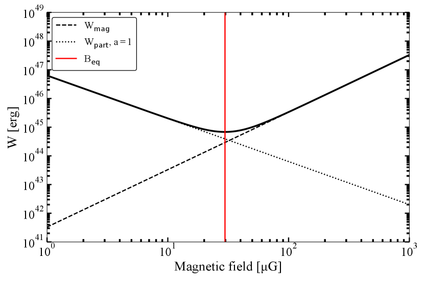
A.2 مقاييس الخسارة والتسريع الزمنية
نحسب مقاييس التبريد الزمنية باتباع الحسابات السابقة لـ del Valle & Romero (2012); del Valle & Pohl (2018) وdel Palacio et al. (2018). أولاً، يُعطى معكوس مقياس التبريد السنكروتروني الزمني بـ
| (16) |
حيث هو مقطع Thompson، وتُعطى كثافة طاقة المجال المغناطيسي بالمعادلة 15. ثم، عند الانتقال إلى خسائر كومبتون العكسي، يمكننا النظر في رفع طاقة فوتونات الأشعة تحت الحمراء أو الفوتونات النجمية. سنتبع التقريبات الواردة في Khangulyan et al. (2014) لحساب المقاييس الزمنية، بافتراض طيف فوتونات جسم أسود، في حدي Thompson (طاقة الإلكترون المنخفضة) وKlein-Nishina (طاقة الإلكترون العالية). ويُحدد الانتقال بين هذين الحدين بالطاقة المميزة لحقل الفوتونات المحيط (بدقة أكبر، عندما يصبح عامل Lorentz للإلكترون فوق حيث هي طاقة الفوتون المميزة). وبالنسبة إلى تشتت كومبتون العكسي مع فوتونات الغبار، نقدر أولاً درجة حرارة الغبار باتباع del Valle & Romero (2012) وDraine (1981)، على أنها
| (17) |
حيث يُفترض أن نصف قطر الغبار النموذجي يساوي m وأن اللمعان النجمي erg/s (Kretschmar et al., 2021). ونحسب أيضاً تصحيح الجسم الرمادي (أو التخفيف) باستخدام الإطار الذي قدمه De Becker et al. (2017) وdel Palacio et al. (2018)، استناداً إلى القدر المتكامل المرصود في الأشعة تحت الحمراء (5.25 mag؛ erg/s) و
| (18) |
إن إدخال هذا العامل يأخذ في الحسبان أن الغبار ليس سميكاً بصرياً تماماً، وهو ما يسبب التباين الكبير بين الفيض المرصود في الأشعة تحت الحمراء والفيض المتوقع من . وبعد الحصول على تصحيح الجسم الرمادي هذا، يمكننا حساب مقاييس التبريد الزمنية باستخدام المعادلتين 41 و42 في Khangulyan et al. (2014) لنظامي Thompson وKlein-Nishina، على الترتيب. وفي هذه المعادلات، تُحجّم كل من طاقة الإلكترون ودرجة حرارة الغبار إلى كتلة سكون الإلكترون ويُرمز إليهما بـ و:
| (19) |
| (20) |
أخيراً، يُحسب مقياس كومبتون العكسي الزمني الكلي على أنه معكوس مجموع معكوسي المعادلتين 19 و20. ثم نكرر هذا الحساب لحقل الإشعاع النجمي، حيث تُستبدل درجة حرارة الغبار بدرجة الحرارة النجمية K. ويُعطى عامل التخفيف الآن بالمعادلة 31 في Khangulyan et al. (2014)، . وبسبب عامل التخفيف المنخفض هذا، مقارنة بمساهمة الغبار، تكون درجة حرارة الفوتونات النجمية الفعالة أدنى من درجة حرارة الغبار، ما يؤدي إلى انتقال بين النظامين عند طاقة إلكترون أدنى.
أخيراً، نحسب الإشعاع الكابح النسبي عبر المعادلة 11 في del Valle & Romero (2012)، بافتراض أن كثافة الرياح معززة بمعامل في الصدمة. أما مقياس الهروب الزمني، وهو آلية الخسارة الأخيرة، فهو مستقل عن الطاقة ويُقدّر بأنه . وباتباع الافتراضات الشائعة، نمذج مقياس التسريع الزمني بافتراض تسريع الصدمة الانتشاري، المعطى في Terada et al. (2012) على أنه (حيث نصحح العامل ليعطي الوحدات الصحيحة) . ونفترض أيضاً انتشار Bohm، أي .
A.3 الطيف السنكروتروني عريض النطاق
لنمذجة الطيف السنكروتروني عريض النطاق، نقوم بما يلي: (i) نفترض دليلاً طيفياً، (ii) نطابق الكثافة الفيضية الراديوية المرصودة من MeerKAT في النطاق L مع التوزيع الطيفي للطاقة، و(iii) نحسب السلوك عند الترددات المنخفضة والعالية بسبب الامتصاص الذاتي السنكروتروني والطاقة العظمى للإلكترونات، على الترتيب. ويمكننا بعد ذلك أيضاً مقارنة ذلك بالحد الأعلى في الأشعة السينية: فقد يقيد عدم الكشف هذا تحديداً الطاقة العظمى للإلكترونات والمجال المغناطيسي، لأن الكسر عالي التردد يعتمد على الكميتين كليهما. غير أن و مرتبطتان أيضاً بحد ذاتهما: عند التجهيز المتساوي، يبين الشكل 8 أن هروب الإلكترونات يحدد الطاقة العظمى. وبالنسبة إلى شدات مجال مغناطيسي مختلفة، سينخفض مقياس التسريع الزمني على نحو ، بينما ينخفض مقياس التبريد السنكروتروني الزمني على نحو . وبما أن الهروب وعمليات كومبتون العكسي كلها مستقلة عن المجال المغناطيسي، فإن الخسائر السنكروترونية ستحدد عند قيمة ما لـ الطاقة العظمى، ومن ثم كسر التبريد.
حيث تكون الخسائر الانتشارية مهيمنة، يمكننا إيجاد الطاقة العظمى للإلكترونات بمساواة مقياسي الهروب والتسريع الزمنيين:
| (21) |
وإذا هيمنت بدلاً من ذلك الخسائر الإشعاعية السنكروترونية عند شدة مجال مغناطيسي عالية، يمكننا اشتقاق (مرة أخرى بمساواة المقاييس الزمنية):
| (22) |
وبمقارنة كلتا المعادلتين، يقع الانتقال بين حالتي هيمنة الهروب وهيمنة السنكروترون عند مجال مغناطيسي . وبالنسبة إلى Vela X-1، تكون G، وهي أكبر من المجال المغناطيسي الأعظمي الذي يسمح للرياح بأن تكون قابلة للانضغاط. لذلك يُتوقع أن تكون صدمة القوس في Vela X-1 مهيمن عليها بالهروب.
يمكن عندئذ تقريب كسر التبريد في الطيف السنكروتروني بالتردد المميز للانبعاث للإلكترونات عند الطاقة العظمى، أي
| (23) |
حيث يختفي اعتماد المجال المغناطيسي بوضوح في الحالة المهيمن عليها سنكروترونياً (). وبإدخال الطاقة العظمى لكلا النظامين في المعادلة أعلاه نحصل على:
| (24) |
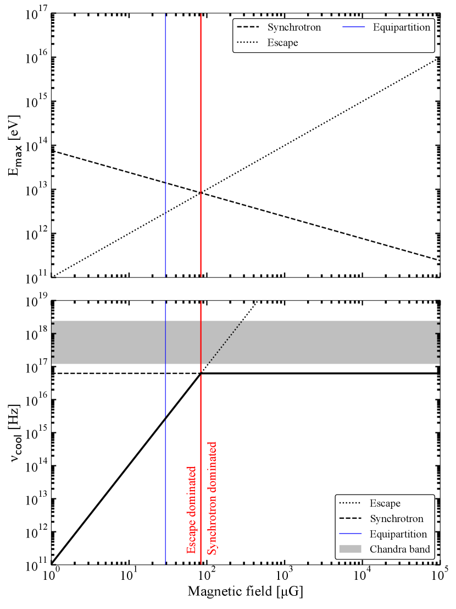
نرسم هذه العلاقات في اللوحة العليا من الشكل 12. وبما أن اعتماد المجال المغناطيسي يسقط في النظام المهيمن عليه سنكروترونياً، نجد تردد كسر تبريد أعظمياً قدره Hz، بصرف النظر عن الدليل الطيفي. وبعد اشتقاق تردد كسر التبريد، يمكننا نمذجة الشكل العام للطيف المعتمد على طاقة الفوتون باتباع del Valle & Romero (2012)1313 13 لاحظ أن هذه المعادلة تصحح خطأ مطبعياً في المرجع الأصلي، بإضافة إشارة السالب الناقصة في الأس.، مثلاً
| (25) |
حيث يُعرّف معامل الامتصاص الذاتي السنكروتروني على أنه وتُعطى بالمعادلة 8.132 في Longair (2011). علاوة على ذلك، فإن هي طاقة الفوتون، وتُعرّف الطاقة الحرجة بواسطة del Valle & Romero (2012) على أنها
| (26) |
أخيراً، وكما ذكرنا، يُطبّع الطيف بحيث يطابق الكثافة الفيضية الراديوية المتكاملة المرصودة. وباستخدام هذا النهج، نرسم الأمثلة الأربعة في الشكل 9.
A.4 كفاءة الحقن
كما عُرّفت في النص الرئيس، تُحسب كفاءة الحقن بوصفها الطاقة المحقونة في الإلكترونات مقسومة على القدرة الحركية المتاحة من الرياح النجمية:
| (27) |
نفترض أن خسائر الطاقة، كما نوقش أعلاه، تهيمن عليها آلية الهروب عند جميع طاقات الإلكترونات. وفي هذا السيناريو، وبما أن خسائر الهروب مستقلة عن الطاقة، ينبغي حقن الطاقة في جماعة الإلكترونات بمعدل . وكما رأينا في القسم الأول من هذا الملحق، يمكننا ربط التطبيع لتوزيع كثافة عدد الإلكترونات بـ (المعادلة 12)، ومن ثم بالفيض الراديوي المرصود (عبر ). وأخيراً، تُعطى قدرة الرياح الحركية المتاحة بعامل ملء الحجم للصدمة القوسية مضروباً في القدرة الحركية الكلية:
| (28) |
ويؤدي جمع جميع المعادلات أعلاه إلى المعادلة 9 لكفاءة الحقن. وكما ذُكر في الحاشية 8 من النص الرئيس، نبسط العلاقة بين و لأغراض تحليلية. غير أن المرء يستطيع أن يتصور نوعياً كيف أن إدراج آليات تبريد إضافية سيزيد المعدل الذي ينبغي أن تُحقن به الطاقة من أجل الحفاظ على حالة مستقرة. وبما أن قدرة الرياح تبقى ثابتة، فإن إدراج عمليات تبريد أخرى يعني لذلك كفاءة حقن أعلى.